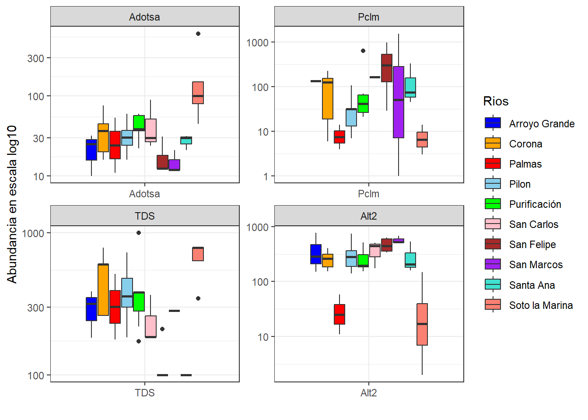
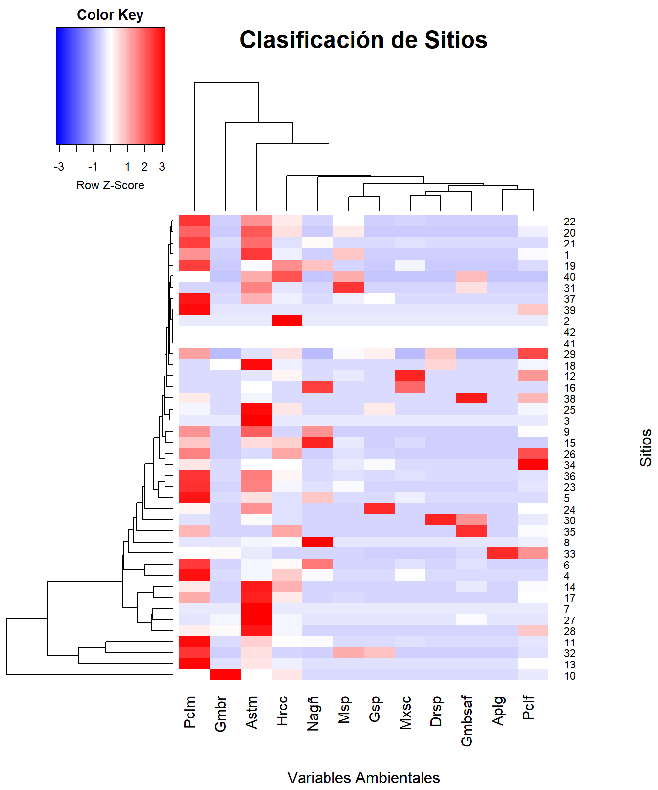

library(readxl)
library(dplyr)
library(kableExtra)
library(tidyverse)
library(lattice)
library(ellipse)
library(corrplot)
require(SciViews)
library(psych)
library(GGally)
require(gclus)
require(SciViews)
require(ade4)
require(vegan)
require(stats)
library(ggplot2)
library(pheatmap)
library("gplots")
library(gridExtra)
library(factoextra)
library(reshape)
library(ggrepel)
library(reshape2)
library(ggforce)
library(car)
library(MASS)
library(candisc)
library(mvnormtest)
source("funciones.r")
library(caret)
library(car)
DOI: https://doi.org/10.1007/s10641-021-01158-9
Contexto de la base de datos
Las bases de datos están compuestas por dos archivos de Excel que contienen datos biológicos y ambientales. En la base de datos biológicos, se encuentran columnas de 90 especies y en las filas las localidades, estas están identificadas con las iniciales M (montaña), P (llanura) y RM (desembocadura de río), indicando la altitud de cada sitio, y están numeradas del 1 al 43. La base de datos ambientales esta constituida por 23 variables ambientales de las cuales 7 variables son cuantitativas y 16 cualitativas. Además, se midieron 9 parámetros de calidad de agua en cada sitio.
Introducción
La comprensión de los patrones de diversidad y distribución de las comunidades acuáticas es fundamental al abordar los sistemas fluviales, porque son determinantes para la ecología acuática contemporánea. Estos patrones han reflejado la interacción entre factores bióticos y abióticos, así como han servido como indicadores de la salud ecosistémica de integridad hidrológica (Ospina et al., 2023). Los peces son uno de los grupos más diversos y ecológicamente significativos de la fauna que habita el ecosistema. La variación longitudinal crea, de hecho, gradientes ambientales que modelan la estructura de las comunidades de peces, tanto en los sistemas neotropicales como en los templados (Ospina et al., 2023; Torruco et al., 2017). Sin embargo, la incertidumbre de los controladores de estos sistemas con relación a la dimensionalidad de las variables ambientales y biológicas sólo puede abordarse a partir de un análisis capaz de juntar disímiles informaciones en patrones ecológicos significativos. Es por esta razón que se emplea la estadística multivariada.
Como buena parte de la ciencia moderna, la ecología ha evolucionado de enfoques más sencillos hacia el uso de modelos estadísticos multivariantes. En este caso, la multi-variedad proporciona a los ecólogos la posibilidad de responder a preguntas complejas sobre la estratificación de la comunidad (De Catalunya et al., 2018). La evolución posterior, en el contexto del software estadístico en general y del lenguaje R en particular, ha permitido que un número cada vez mayor de ecólogos formule y analice hipótesis complejas y multivariantes dentro de flujos de trabajo reproducibles y personalizados (González, 2017).
En el presente ejercicio, se empleará una base de datos derivada del estudio de Ruiz-Campos et al. (2021), donde se analiza la diversidad y distribución longitudinal de las comunidades de peces en la cuenca del río Soto La Marina, al noreste de México. A través del análisis de datos ambientales y biológicos recolectados en 43 sitios, los autores identifican tres ensamblajes principales asociados a zonas fisiográficas (montaña, planicie y desembocadura), y exploran cómo variables como salinidad, conductividad, turbidez y estructura del hábitat explican la composición de la ictiofauna a lo largo del gradiente ambiental. Se realizará un proceso básico de preparación de datos, seguido de visualizaciones exploratorias, a su vez como parte del enfoque multivariado, se implementarán análisis de Componentes Principales (PCA) para explorar gradientes ambientales y Escalamiento Multidimensional No Métrico (NMDS) para evaluar la estructuración de las comunidades ícticas en función de la composición de especies. Todos los análisis serán desarrollados mediante el software estadístico RStudio. Con ello, se busca identificar tendencias espaciales, relaciones entre variables y patrones ecológicos relevantes en la diversidad de peces a lo largo del gradiente longitudinal del sistema fluvial.
Objetivos
Objetivo General:
Examinar los patrones de distribución de las comunidades de peces en un sistema fluvial a partir de sus relaciones con gradientes ambientales.
Objetivos Específicos:
- Estimar la asociación entre variables ambientales y la composición de especies de peces.
- Detectar patrones de agrupamiento entre sitios de muestreo en función de similitudes en las comunidades ícticas.
Pregunta de análisis:
¿Qué variables ambientales están más relacionadas con los cambios en las comunidades de peces a lo largo del sistema fluvial, y cómo estas relaciones pueden explicar los patrones de distribución observados?
Diagrama de flujo

Librerías requeridas
Base de datos
# Leer la base de datos
biol <- read_excel("peces marinos méxico_biológicos.xlsx", sheet = "Hoja1", col_names = TRUE)
amb <- read_excel("peces marinos méxico_ambientales.xlsx", sheet = "Hoja1", col_names = TRUE)# Convertir de formato largo a ancho los datos biológicos
largo_biol <- biol %>%
pivot_longer(cols = 2:90, # Seleccionamos las columnas de especies
names_to = "Especie", # Nueva columna con los nombres de las especies
values_to = "Abundancia") # Nueva columna con los valores de abundancia# Convertir de formato largo a ancho los datos ambientales
largo_amb <- amb %>%
pivot_longer(cols = 2:38, # Seleccionamos las columnas de especies
names_to = "Variables", # Nueva columna con los nombres de las especies
values_to = "Valores")Abundancia por sitios
largo_biol <- largo_biol %>%
group_by(Sitios) %>%
mutate(Abundancia_Total_Sitio = sum(Abundancia, na.rm = TRUE)) %>%
ungroup()
# Resumen de la base de datos original (seis primeras filas)
head(largo_biol) %>%
kbl() %>%
kable_classic(full_width=F)| Sitios | Especie | Abundancia | Abundancia_Total_Sitio |
|---|---|---|---|
| 17M | Hypanus sabinus | 0 | 95 |
| 17M | Atractosteus spatula | 0 | 95 |
| 17M | Elops saurus | 0 | 95 |
| 17M | Megalops atlanticus | 0 | 95 |
| 17M | Albula vulpes | 0 | 95 |
| 17M | Anguila rostrata | 0 | 95 |
# Generar una nueva columna con valores abreviados en biol
largo_biol <-
largo_biol %>%
mutate(Abrev = abbreviate(Especie, minlength = 4))# Unir bases de datos
biol_amb <-
amb %>%
left_join(largo_biol, by= "Sitios")Taxones más abundantes
La Tabla 1 muestra las 30 especies más abundantes en los diferentes ríos muestreados. Se observa que la especie Poecilia mexicana es la más abundante con un total de 5.573 registros, seguida de la especie Astyanax mexicanus con 4.003 registros, indicando que son especies muy comunes en los sitios de estudio.
# Seleccionar los 15 taxones más abundantes
Abundantes <- largo_biol %>%
group_by(Especie, Abrev) %>% # Agrupar por especie y abreviatura
summarise(Abundancia_Total =
sum(Abundancia, na.rm = TRUE),
.groups = "drop") %>% # Eliminar el agrupamiento
arrange(desc(Abundancia_Total)) %>% # Ordenar de mayor a menor
slice_head(n = 30) # Seleccionar los 15 taxones más abundantes
# Visualizar tabla
head (Abundantes) %>%
kbl() %>%
kable_classic(full_width=F)| Especie | Abrev | Abundancia_Total |
|---|---|---|
| Poecilia mexicana | Pclm | 5573 |
| Astyanax mexicanus | Astm | 4003 |
| Herichthys cyanoguttatus | Hrcc | 1616 |
| Gambusia regani | Gmbr | 1519 |
| Poecilia formosa | Pclf | 1222 |
| Notropis aguirrepequeñoi | Nagñ | 996 |
Resumen estadístico de la base de datos biológica
La Tabla 2 muestra un resumen estadístico de los datos biológicos en el sitio de estudio. Se puede observar que el sitio 35M destaca con la mayor abundancia media (~24) y el valor máximo más alto (1543), por el contrario, el sitio 1M tiene la menor abundancia media (0.14) y el máximo más bajo (10). La desviación estándar (SD) refleja la variabilidad en la abundancia dentro de cada sitio. Sitios como 35M y 26M muestran una alta variabilidad (SD de 167.5 y 150.5, respectivamente), Por otro lado, sitios como 1M y 9P tienen una variabilidad baja (SD de 1.10 y 1.77).
# Resumen estadístico de la base biológica
resumen_biologico <- largo_biol %>%
group_by(Sitios) %>% # Agrupar por sitio
summarise(
Abundancia_Media = mean(Abundancia, na.rm = TRUE),
Abundancia_Min = min(Abundancia, na.rm = TRUE),
Abundancia_Max = max(Abundancia, na.rm = TRUE),
Abundancia_SD = sd(Abundancia, na.rm = TRUE),
.groups = "drop" # Evita mensajes sobre agrupación
)
head(resumen_biologico) %>%
kbl() %>%
kable_classic(full_width=F)| Sitios | Abundancia_Media | Abundancia_Min | Abundancia_Max | Abundancia_SD |
|---|---|---|---|---|
| 10P | 0.8426966 | 0 | 20 | 3.243521 |
| 11M | 2.0337079 | 0 | 79 | 9.898863 |
| 12M | 0.8764045 | 0 | 38 | 5.202316 |
| 13M | 0.9887640 | 0 | 32 | 4.427431 |
| 14M | 2.3932584 | 0 | 106 | 13.558474 |
| 15P | 0.9213483 | 0 | 20 | 3.049682 |
Resumen estadístico de la base de datos ambiental
En la Tabla 3 muestra un resumen estadístico de los datos ambientales en el sitio de estudio. Se observa que el pH muestra una media de 7.51, con valores que oscilan entre 6.5 y 8.3, lo que indica un ambiente predominantemente neutro a ligeramente alcalino. La temperatura del agua tiene una media de 27.36°C. La conductividad, con una media de 641.39 µS/cm y un máximo de 1655 µS/cm, refleja diferencias en la concentración de iones disueltos, posiblemente relacionadas con la presencia de sales u otros compuestos. El oxígeno disuelto, con una media de 6.66 mg/L, muestra una amplia variabilidad (desde 1.2 mg/L hasta 24.9 mg/L), lo que podría indicar diferencias en la calidad del agua y la actividad fotosintética. Los nutrientes como nitritos (NO₂), nitratos (NO₃) y amonio (NH₄⁺) presentan concentraciones bajas en general, con medias de 0.02 mg/L, 0.5 mg/L y 1.47 mg/L, respectivamente, lo que sugiere una limitada contaminación por compuestos nitrogenados. Los fosfatos, con una media de 0.21 mg/L, también indican bajos niveles de contaminación por fósforo. En cuanto a la varianza, la conductividad presentó los valores más altos (140964.03 µS/cm).
# Selecciona solo las variables ambientales de interés
variables_seleccionadas <- amb %>%
dplyr::select(`pH`, `Water temperature`, `Conductivity`,
`Salinity`, `Transparency`, `Oxygen`,
`Carbon Dioxide`, `Alkalinity`, `NO2`,
`NO3`, `Ammonium`, `Hardness`,
`Phosphates`, `TDS`)
# Resumen estadístico de las variables seleccionadas
resumen_ambiental <- variables_seleccionadas %>%
summarise(across(everything(),
list(Media = ~ round (mean(., na.rm = TRUE), 2),
Minimo = ~ round (min(., na.rm = TRUE), 2),
Maximo = ~ round (max(., na.rm = TRUE), 2),
DE = ~ round (sd(., na.rm = TRUE), 2),
Varianza = ~ round (var(., na.rm = TRUE), 2),
Rango = ~ round (max(., na.rm = TRUE) - min(., na.rm = TRUE), 2),
Q1 = ~ round (quantile(., probs = 0.25, na.rm = TRUE), 2),
Q2 = ~ round (quantile(., probs = 0.50, na.rm = TRUE), 2),
Q3 = ~ round (quantile(., probs = 0.75, na.rm = TRUE), 2)))) %>%
pivot_longer(cols = everything(),
names_to = c("Variable", "Estadistico"),
names_sep = "_") %>%
pivot_wider(names_from = "Estadistico", values_from = "value")
resumen_ambiental %>%
kbl() %>%
kable_classic()| Variable | Media | Minimo | Maximo | DE | Varianza | Rango | Q1 | Q2 | Q3 |
|---|---|---|---|---|---|---|---|---|---|
| pH | 7.51 | 6.50 | 8.30 | 0.46 | 0.22 | 1.80 | 7.20 | 7.55 | 7.90 |
| Water temperature | 27.36 | 16.90 | 39.00 | 4.67 | 21.80 | 22.10 | 25.00 | 28.00 | 29.00 |
| Conductivity | 641.39 | 231.00 | 1655.00 | 375.45 | 140964.03 | 1424.00 | 398.12 | 495.50 | 657.12 |
| Salinity | 3.04 | 0.00 | 26.00 | 4.86 | 23.58 | 26.00 | 2.00 | 2.00 | 2.00 |
| Transparency | 79.00 | 0.79 | 600.00 | 92.51 | 8558.78 | 599.21 | 31.25 | 64.50 | 82.00 |
| Oxygen | 6.66 | 1.20 | 24.90 | 5.04 | 25.42 | 23.70 | 3.67 | 5.92 | 7.39 |
| Carbon Dioxide | 22.75 | 0.00 | 103.50 | 19.73 | 389.32 | 103.50 | 13.88 | 20.00 | 25.00 |
| Alkalinity | 192.58 | 0.00 | 410.00 | 73.73 | 5436.05 | 410.00 | 135.50 | 182.10 | 233.50 |
| NO2 | 0.02 | 0.00 | 0.20 | 0.04 | 0.00 | 0.20 | 0.00 | 0.01 | 0.02 |
| NO3 | 0.51 | 0.00 | 3.65 | 0.74 | 0.55 | 3.65 | 0.03 | 0.16 | 0.74 |
| Ammonium | 1.49 | 0.00 | 5.00 | 1.55 | 2.40 | 5.00 | 0.32 | 1.09 | 1.98 |
| Hardness | 290.69 | 92.00 | 1000.00 | 195.62 | 38266.72 | 908.00 | 172.25 | 238.00 | 350.00 |
| Phosphates | 0.21 | 0.00 | 0.75 | 0.19 | 0.03 | 0.75 | 0.05 | 0.17 | 0.34 |
| TDS | 362.26 | 100.00 | 998.00 | 234.19 | 54846.73 | 898.00 | 184.00 | 302.50 | 480.75 |
biol_abrev <- largo_biol %>%
dplyr::select(Sitios, Abrev, Abundancia) %>%
pivot_wider(names_from = Abrev, values_from = Abundancia) #convertir a formato anchobiol_log <- largo_biol %>%
dplyr::select(Sitios, Abrev, Abundancia) %>%
pivot_wider(names_from = Abrev, values_from = Abundancia)
columnas_numericas <- names(biol_log)[2:50]
# Iterar sobre los nombres de las columnas
for (columna in columnas_numericas) {
# Manejar los NAs: reemplazarlos con 0 antes de la suma condicional
biol_log[[columna]][is.na(biol_log[[columna]])] <- 0
# Identificar los valores cero y sumar 1 solo a ellos
biol_log[[columna]][biol_log[[columna]] == 0] <- biol_log[[columna]][biol_log[[columna]] == 0] + 1
# Aplicar el logaritmo común (log10) a la columna
biol_log[[columna]] <- log10(biol_log[[columna]])
}Exploración gráfica en Excel
La Figura 1 muestra los valores promedio de conductividad, dureza y sólidos disueltos totales (TDS) por Río, con sus respectivas desviaciones estándar. Los puntos rojos representan la abundancia total de peces por Río. Se observa que, en algunos sitios como San Carlos y Santa Ana, los altos valores de conductividad podrían estar asociados con una mayor abundancia de peces, pero esta relación no se mantiene igual en todos los sitios, lo que indica que otros factores ambientales o ecológicos también influyen en la distribución y abundancia de peces.

Figura 1. Relación entre variables ambientales del agua y la abundancia total de peces por Río.
La figura 2 muestra la abundancia de las seis principales especies de peces por Río. Se observa que Pclm y Astm presentan las mayores abundancias en la mayoría de los Ríos, destacándose especialmente en San Marcos y San Felipe. El taxón Gmbr muestra una abundancia particularmente alta en Arroyo Grande, lo que indica una posible especialización o adaptación local, ya que su presencia en los demás sitios es baja o nula. Estas diferencias en abundancia entre taxones y sitios podrían reflejar gradientes ambientales.
Figura 2. Distribución de abundancia de las 6 principales especies de peces por Río.
Exploración gráfica
Figura de elipises con las especies más abundantes
La Figura 1 representa las relaciones entre las especies de peces evaluadas. En su mayoría, se observan correlaciones positivas aunque no altamente significativas. Por ejemplo, la abundancia total tiene correlación positiva con las especies Astyanax mexicanus (76%), Herichthys cyanoguttatus (71%) y Poecilia mexicana (68%). Por otro lado, la mayoría de las correlaciones negativas fueron leves, lo que indica que la abundancia de una especie no parece verse fuertemente afectada por la presencia de otra.
d_elipses <- read_xlsx("datos_PCA.xlsx", sheet = "Hoja2")
# Transformación logarítmica de las especies más abundantes
biol2 <- log(d_elipses[, 40:52] + 1)
# Matriz de correelación con las variables transformadas
M <- cor(biol2, use = "complete.obs")corrplot(M, method = "circle", # Correlaciones con circulos
type = "lower", insig="blank", # Forma del panel
order = "AOE", diag = FALSE, # Ordenar por nivel de correlación
addCoef.col ="black", # Color de los coeficientes
number.cex = 0.6, # Tamaño del texto
col = COL2("RdYlBu", 200))Figura de elipses de los datos ambientales fisicoquímicos
La Figura 2 representa las relaciones entre las variables ambientales evaluadas. Se observa que la relación más fuerte se observó entre las variables Profundidad media de la zona muestreada (Adotsa) y Profundidad máxima (Mxmd) (96%), Salinidad (Slnt) y Anchura de la superficie del agua (Wotws) (84%), y Conductividad (Cndc) y Sólidos disueltos totales (TDS) (77%). Lo que nos indica que estás variables estarán correlacionadas al estar en valores altos o bajos en los sitios. Por otro lado, no se observan relaciones negativas fuertes entre las varibales ambientales.
M2 <- cor(d_elipses[, c(4:8, 25:29, 33, 36, 39)]) # Matriz de correlación
# Elipses
corrplot(M2, method = "circle", # Correlaciones con circulos
type = "lower", insig="blank", # Forma del panel
order = "AOE", diag = FALSE, # Ordenar por nivel de correlación
addCoef.col ="black", # Color de los coeficientes
number.cex = 0.6, # Tamaño del texto
col = COL2("RdYlBu", 200))Figura de elipses de los datos ambientales y biológicos con las abundancias convertidas a logaritmo (log10)
La Figura 3 muestra las relaciones entre las especies de peces y las variables ambientales evaluadas. Se observaron relaciones fuertemente positivas entre el pH y la especie Gambusia sp. (77%), entre la Alcalinidad (Alkl) y Aplodinotus grunniens (77%), y entre Amonio (Ammn) y Herichthys cyanoguttatus (73%). Por otro lado, para la especie Gambusia regani se observaron relaciones negativas con las variables Adotsa, Mxmd, Wotws, Typs (Tipo de corriente) y Slnt. La abundanica total tuvo una relación positiva con las variables Ammn (54%) y TDS (53%) y una realción negativa con Alt2 (Altitud).
Mamb_biol <- cor(M2, M, "pairwise.complete.obs")
# matriz de elipses
corrplot(Mamb_biol, method = "circle",
type = "full", # Mostrar toda la matriz
order = "original",
addCoef.col = "black", number.cex = 0.6,
col = COL2("RdYlBu", 200))Nueva columna con los ríos a los que pertenece cada sitio muestreado
biol_amb$Sitios = as.factor(biol_amb$Sitios)
biol_amb <- biol_amb %>%
mutate(Rios = case_when(
Sitios %in% c("1M", "2M", "3P") ~ "Arroyo Grande",
Sitios %in% c("4M", "5M", "6P", "7P", "8M") ~ "Corona",
Sitios %in% c("9P", "10P") ~ "Palmas",
Sitios %in% c("11M", "12M", "13M", "14M", "15P", "16P") ~ "Pilón",
Sitios %in% c("17M", "18M", "19P", "20M", "21P", "22P", "23P") ~ "Purificación",
Sitios %in% c("25M", "26M", "27P") ~ "San Carlos",
Sitios %in% c("28M", "29M", "30M", "31M", "32M") ~ "San Felipe",
Sitios %in% c("33M", "34M", "35M") ~ "San Marcos",
Sitios %in% c("36M", "37P", "38M") ~ "Santa Ana",
Sitios %in% c("39P", "40P", "41P", "42RM", "43RM") ~ "Soto la Marina",
TRUE ~ "Otro"
))Figuras de cajas y bigotes
La Figura 4 muestra la distribución de las abundancias de peces en los diferentes ríos muestreados. San Carlos y Santa Ana tienen las medianas más altas, y no se superponen sus notches con las de ríos como Palmas o Soto la Marina. Esto indica diferencias significativas entre estos ríos en cuanto a la abundancia de peces. Por otro lado, Palmas exhibe la mediana más baja y una baja variabilidad, lo que sugiere un ecosistema más homogéneo y posiblemente menos favorable.
# Organización por nivel de magnitud
ggplot(d_elipses, aes(x = fct_reorder(Rios, Ab_Total),y=Ab_Total)) +
geom_boxplot(notch = T, aes(fill = Rios)) +
scale_y_log10() +
labs(x = "Ríos muestreados",
y = "Abundancia en escala log10",
fill = "Ríos muestreados") +
theme_bw() +
theme(
plot.title =
element_text(hjust = 0.5, face =
"bold", size = 14), # Centrar el título
axis.text.x = element_text(
angle = 45, vjust = 1, hjust = 1) # Rotar nombres de ríos en 45°
) +
scale_fill_manual(values = c("blue", "orange", "red", "skyblue",
"green", "pink", "brown", "purple",
"turquoise", "salmon"))Figuras multivaraidas de Cajas y bigotes
La Figura 5 muestra la distribución de la abundancia de peces (en escala log10) en relación con diferentes variables ambientales y según el río muestreado. El primer panel muestra la relación entre la abundancia y la profundidad promedio del sitio de muestreo; Soto la Marina presenta las mayores abundancias asociadas con mayor profundidad. El segundo panel muestra la relación entre la abundancia y la especie Poecilia mexicana; San Felipe presenta una alta abundancia en sitios donde esta especie está altamente presente. El tercer panel muestra la relación entre la abundancia y los sólidos disueltos totales; Soto la Marina y Corona presentan mayores medianas de abundancia asociadas con mayores valores de TDS.
# Figuras multivariadas de Cajas y bigotes
d_elipses <- as.data.frame(d_elipses)
ggplot(melt(d_elipses[,c(2,c(6,40,39,26))]),
aes(x=variable, y=value)) +
geom_boxplot(aes(fill=Rios)) +
scale_y_log10() +
scale_fill_manual(values
= c("blue", "orange", "red",
"skyblue", "green", "pink",
"brown", "purple", "turquoise",
"salmon")) +
labs(x="",y="Abundancia en escala log10") +
facet_wrap(~ variable,scales="free") +
theme_bw()

Regresión lineal entre la abundancia y la Altitud
La Figura 6 muestra una regresión lineal entre la abundancia total de peces y la altitud. Se puede observar un comportamiento lineal ligeramente positivo de las abundancias respecto a la altitud, donde a medida que va aumentanto la altitud, también tiende a aumentar la abundacia de peces. Además, se observa que la mayoría de las abundancias se agrupan en altitudes entre 100 y 500 metros.
#Figuras de regresión entre la abundancia y la Altitud
ggplot(d_elipses, aes(x = Alt2, y = Ab_Total) )+
geom_point(aes(color = Rios), size = 3) +
geom_smooth(method= "lm") +
scale_y_log10() +
labs(x = "Altitud",
y = "Abundancia en escala log10")+
theme_bw() +
theme(panel.grid = element_blank()
)Regresión suavizada entre la abundancia y la Altitud
La Figura 7 muestra una regresión suavizada entre la abundancia total de peces y la altitud. Se observa una relación de tipo no lineal, que al ser suavizada se ajusta en mejor medidad a los datos dispersos, con una mayor abundancia en las altitudes entre los 200 y 450 metros.
#Figuras de regresión entre la abundancia y la Altitud
ggplot(d_elipses, aes(x = Alt2, y = Ab_Total) )+
geom_point(aes(color = Rios), size = 3) +
geom_smooth(span = 0.8) +
scale_y_log10() +
labs(x = "Altitud",
y = "Abundancia en escala log10")+
theme_bw() +
theme(panel.grid = element_blank()
)Regresión lineal entre la abundancia y los Sólidos Disueltos Totales (TDS)
La Figura 8 muestra una regresión lineal entre la abundancia y los Sólidos Totales Disueltos. Se puede observar un comportamiento lineal ligeramente negativo de las abundancias respecto a TDS, donde a medida que va aumentando TDS, tienden a disminuir las abundancias de peces. Además, se observa que la mayoría de las abundancias se agrupan en en TDS entre 100 y 375 ppm.
# Regresion lineal entre la abundancia y la Conuductividad
ggplot(d_elipses, aes(x= TDS, y= Ab_Total) ) +
geom_point(aes(color = Rios), size = 3) +
geom_smooth(method= "lm")+
scale_y_log10() +
labs(x = "Sólidos Disueltos Totales",
y = "Abundancia en escala log10")+
theme(panel.grid = element_blank())
Regresión suavizada entre la abundancia y los Sólidos Disueltos Totales
La Figura 9 muestra la variación de la abundancia de organismos en función de TDS en los diferentes Ríos muestreados. La curva de regresión suavizada sugiere que la abundancia es menor en valores cercanos a 0 ppm, pero también cuando estos valores son superiores 375 ppm.
# Regresion lineal entre la abundancia y el pH
ggplot(d_elipses, aes(x= TDS, y= Ab_Total) ) +
geom_point(aes(color = Rios), size = 3) +
geom_smooth(span = 0.8)+
scale_y_log10() +
labs(x = "Sólidos Disueltos Totales",
y = "Abundancia en escala log10")+
theme(panel.grid = element_blank())Grafico de burbujas
En la Figura 10 se puede observar que las abundancias estuvieron entre el nivel de pH 6.5 y 8.4, donde fuera de este rango no se registraron muchos individuos. La especie que mayores abundancias regitraron fueron: Pcml con 1500 individuos a un nivel de 8 y Gmbr con 1500 individuos en un nivel de 7.4. El río Arroyo Grande tuvo restringidas sus abundancias en el nivel de pH 6.7. Las abundancias de especies como Pclf, Hrcc y Astm se distribuyeron uniformemente entre los valores de pH 6.5 y 8.4 con menos de 500 individuos por sitio.
# Preparar breviar nombres de los grupos taxonómicos
biol_amb <- biol_amb %>%
arrange(desc(Abundancia)) %>%
mutate(
Abrev = fct_inorder(Abrev)
) %>%
filter(Abundancia>10)
# Crear el gráfico de burbujas
ggplot(biol_amb, aes(x = pH, y = Abrev, size = Abundancia, color = Rios)) +
geom_point(alpha = 0.7) +
# Líneas verticales para valores de pH
geom_vline(
xintercept = seq(6.4, 8.5, by = 0.5),
color = "black",
linetype = "dashed",
linewidth = 0.3
) +
# Escalas y ejes
scale_size(range = c(1, 8), name = "Abundancia") +
scale_x_continuous(
limits = c(6.4, 8.5),
breaks = seq(6.4, 8.5, by = 0.5),
expand = c(0, 0)
) +
scale_y_discrete(limits = rev) +
# Configuración del tema sin líneas de grid
theme_bw() +
theme(panel.grid = element_blank(),
panel.border = element_rect(
color = "black", fill = NA),
axis.ticks.y = element_blank(),
axis.text = element_text(size = 10),
axis.title.x = element_text(
size = 12, face = "bold",
margin = margin(t = 10)),
legend.position = "right",
legend.box = "vertical") +
labs(
x = "pH",
y = "Especies",
color = "Ríos"
) +
guides(size = guide_legend(title = NULL,
override.aes = list(shape = 1,
color = "#377eb8",
stroke = 1.2)),
# Circulos de las Layers en la leyenda
color = guide_legend(title = NULL) # Eliminar el título de la leyenda para "group"
)PCA
1. Ajuste de las bases de datos fisiqcoquimica (amb) y biológica (tax.hel)
d_elipses <- read_xlsx("datos_PCA.xlsx", sheet = "Hoja2")# Variables ambientales con transformación logarítmica
amb1=log10(d_elipses[,c(4:8, 25:29, 33, 36, 39)]+1)# Variables biológicas linealizadas - Taxones con Hellinger
tax.hel=decostand(d_elipses[,c(40:51)],"hellinger")2. PCA con paquete factoextra
La Tabla 4 muestra que la varianza acumulada de los dos primeros componentes principales es 0.66 o del 66%, lo cual indica una buena configuración de los datos para la ordenación del PCA.
# Variables ambientales con transformación logarítmica
amb1=log10(d_elipses[,c(4:8, 25:29, 33, 36, 39)]+1)
# PCA
pca1 <- prcomp(amb1)
summary(pca1)$"importance"[,1:2] %>%
kbl() %>%
kable_classic(full_width=F)| PC1 | PC2 | |
|---|---|---|
| Standard deviation | 0.7361981 | 0.3863051 |
| Proportion of Variance | 0.5178600 | 0.1425900 |
| Cumulative Proportion | 0.5178600 | 0.6604500 |
2.1. Contribución eje 1
La Figura 11 muestra aquellas variables más influyentes y que superen el umbral de contribución (por encima de la línea roja punteada) para el primer componente principal, donde Altitud (Alt2) fue la variable ambiental que más contribuyó, seguido de Anchura de la superficie del agua (Wotws) y la Profundidad Media de la Zona Muestreada (Adotsa). Esto indica que estas variables tienen un papel clave en la diferenciación de los sitios analizados y probablemente en la estructuración de las comunidades de peces.
# 2.1 Contribución del eje 1
fviz_contrib(pca1,choice="var",axes=1) +
labs(title = "Contribución de las variables en el PC1",
y = "Contribuciones (%)",
x= "Variables ambientales") +
theme_bw() +
theme(panel.grid = element_blank(), axis.text.x = element_text(angle = 90, hjust = 1, vjust = 0.5))
3. PCA con ggplot
d_elipses <- d_elipses %>%
mutate(Zona = case_when(
Alt2 <= 10 ~ "Baja",
Alt2 >= 11 & Alt2 < 199 ~ "Medio",
Alt2 > 200 ~ "Alto"
))pca <- prcomp(tax.hel)3.1. Coordenadas de los sitios y el factor “coord.sit
# 4.1 Coordenadas de los sitios y el factor “coord.sit"
coord.sit <- as.data.frame(pca$x[,1:2]) # Coordenadas de los sitios
coord.sit$sitios <- rownames(coord.sit) # Crear una columna con nombres de los sitios
coord.sit$grp <- d_elipses$Zona # Adicionar columna de grupos por Zona3.2. Coordenadas de los taxones “coord.tax”
# 4.2 Coordenadas de los taxones “coord.tax”
coord.tax <- as.data.frame(pca$rotation[,1:2]) # Dos primeros ejes
coord.tax$especies <- rownames(coord.tax) # Insertar columna con nombres de las especies3.3. Coordenadas de las ambientales “coord.amb”
# 4.3 Coordenadas de las ambientales “coord.amb”
amb2 = envfit(pca,amb1)
coord.amb = as.data.frame(amb2$"vectors"$arrows[,1:2])
# coord.amb = as.data.frame(scores(amb2, "vectors"))
coord.amb$amb1 <- rownames(coord.amb) 3.4. Figura con de elipses por concavidades - geom_mark_hull
La Figura 12 muestra que a mayor altitud (grupo “Alto”), algunas variables biológicas como Poecilia mexicana y la abundancia total están más correlacionadas negativamente con el PC1, lo cual podría estar relacionado con cambios en la composición de especies o condiciones ambientales. En contraste, el grupo “Bajo” se separa claramente hacia la parte superior derecha, posiblemente por la influencia de variables como Salinidad y Conductividad.
# 4.4 Figura con de elipses por concavidades - geom_mark_hull
ggplot() +
# *Sitios
geom_text_repel(data = coord.sit,aes(PC1,PC2,label=row.names(coord.sit)),
size=4)+ # Muestra el cuadro de la figura
geom_point(data = coord.sit,aes(PC1,PC2,colour=grp),size=4)+
scale_shape_manual(values = c(21:25))+
# Taxones *valores de cero para caracteres de las flechas (arrow)
geom_segment(data = coord.tax,aes(x = 0, y = 0, xend = PC1, yend = PC2),
arrow = arrow(angle=0,length = unit(0,"cm"),
type = "closed"),linetype=0, size=0,colour = "red")+
geom_text_repel(data = coord.tax,aes(PC1,PC2,label=especies),colour = "red")+
# Ambiental
geom_segment(data = coord.amb,aes(x = 0, y = 0, xend = PC1/2.5, yend = PC2/2.5),
arrow = arrow(angle=22.5,length = unit(0.25,"cm"),
type = "closed"),linetype=1, size=0.6,colour = "blue")+
geom_text_repel(data = coord.amb,aes(PC1,PC2,label=row.names(coord.amb)),
colour = "#00abff")+
# Factor
geom_mark_hull(data=coord.sit, aes(x=PC1,y=PC2,fill=grp,group=grp,
colour=grp),alpha=0.15) +
geom_hline(yintercept=0,linetype=3,size=1) +
geom_vline(xintercept=0,linetype=3,size=1)+
guides(shape=guide_legend(title=NULL,color="black"),
fill=guide_legend(title=NULL))+
theme_bw()+theme(panel.grid=element_blank())3.5. Figura con de elipses por cada zona
En la figura Figura 13 se observo un agrupamiento de las variables biologicas en los tres sitios, donde se observaron diferencias entre las especies en zonas altas con las dos zonas restantes. Se observo una maypr variabilidad en el el grupo medio, debido a que es el que mayor largo y ancho poseen.
fviz_pca_ind(pca1, geom.ind = "point",
col.ind = d_elipses$Zona, # Colores por grupo - río
palette = c("#00AFBB", "#E7B800", "red"),
addEllipses = TRUE, ellipse.type = "confidence",
legend.title = "Zonas") +
labs(y = "PC2",
x= "PC1") +
theme_bw() +
theme(panel.grid = element_blank())
NMDS
# Bases datos
spe <- read_excel("peces marinos méxico_biológicos.xlsx", sheet = "Hoja2", col_names = TRUE)
env <- read_excel("peces marinos méxico_ambientales.xlsx", sheet = "Hoja2",col_names = TRUE)spe <- spe %>%
select_at(vars(c(2:90)))
env <- env %>%
select_at(vars(c(3:7, 24:25, 27, 35, 38)))# Transformación de abundancias
spe.h = decostand(spe, "hellinger")
head(round(spe.h,3)) %>%
kbl() %>%
kable_classic(full_width=F)| Hyps | Atrs | Elps | Mgla | Albv | Angr | Myrp | Ancm | Anch | Brvg | Brvp | Drsc | Drsp | Hrnj | Opso | Cmpa | Cypl | Cypc | Dnde | Dsp. | Nagñ | Mxsc | Astm | Arpf | Amrm | Amrn | Ictl | Ictp | Isp. | Pylo | Synf | Prcp | Djsm | Mglc | Mmbm | Mndb | Hmrb | Strt | Fndg | Lcnp | Gmbsaf | Gmbsar | Gmbr | Gsp. | Pclf | Pcll | Pclm | Psp. | Xphv | Prnr | Cntu | Mycb | Srra | Lpmm | Msp. | Crnc | Crnh | Crnl | Olgs | Trcc | Trcf | Ltjnscm | Ltjnscy | Ltjg | Dpta | Dptr | Ecnm | Grrc | Anss | Arcp | Lgdr | Aplg | Brdc | Brdr | Cyna | Cynn | Lstx | Mcru | Pgnc | Hrcl | Hrcc | Orca | Drmm | Gbmd | Gbno | Scmr | Etrc | Achl | Symc |
|---|---|---|---|---|---|---|---|---|---|---|---|---|---|---|---|---|---|---|---|---|---|---|---|---|---|---|---|---|---|---|---|---|---|---|---|---|---|---|---|---|---|---|---|---|---|---|---|---|---|---|---|---|---|---|---|---|---|---|---|---|---|---|---|---|---|---|---|---|---|---|---|---|---|---|---|---|---|---|---|---|---|---|---|---|---|---|---|---|
| 0 | 0 | 0 | 0 | 0 | 0 | 0 | 0 | 0 | 0 | 0 | 0 | 0 | 0 | 0 | 0 | 0 | 0 | 0.205 | 0 | 0.000 | 0.000 | 0.580 | 0 | 0.000 | 0.000 | 0 | 0 | 0 | 0 | 0 | 0 | 0 | 0 | 0 | 0 | 0 | 0 | 0.397 | 0 | 0.000 | 0 | 0.000 | 0 | 0.229 | 0.000 | 0.470 | 0 | 0.000 | 0 | 0 | 0 | 0 | 0 | 0.384 | 0 | 0 | 0 | 0 | 0 | 0 | 0 | 0 | 0 | 0 | 0 | 0 | 0 | 0 | 0 | 0 | 0 | 0 | 0 | 0 | 0 | 0 | 0 | 0 | 0.000 | 0.205 | 0 | 0 | 0 | 0 | 0 | 0 | 0 | 0 |
| 0 | 0 | 0 | 0 | 0 | 0 | 0 | 0 | 0 | 0 | 0 | 0 | 0 | 0 | 0 | 0 | 0 | 0 | 0.000 | 0 | 0.000 | 0.000 | 0.000 | 0 | 0.000 | 0.000 | 0 | 0 | 0 | 0 | 0 | 0 | 0 | 0 | 0 | 0 | 0 | 0 | 0.000 | 0 | 0.000 | 0 | 0.000 | 0 | 0.000 | 0.000 | 0.000 | 0 | 0.000 | 0 | 0 | 0 | 0 | 0 | 0.000 | 0 | 0 | 0 | 0 | 0 | 0 | 0 | 0 | 0 | 0 | 0 | 0 | 0 | 0 | 0 | 0 | 0 | 0 | 0 | 0 | 0 | 0 | 0 | 0 | 0.877 | 0.480 | 0 | 0 | 0 | 0 | 0 | 0 | 0 | 0 |
| 0 | 0 | 0 | 0 | 0 | 0 | 0 | 0 | 0 | 0 | 0 | 0 | 0 | 0 | 0 | 0 | 0 | 0 | 0.000 | 0 | 0.000 | 0.000 | 1.000 | 0 | 0.000 | 0.000 | 0 | 0 | 0 | 0 | 0 | 0 | 0 | 0 | 0 | 0 | 0 | 0 | 0.000 | 0 | 0.000 | 0 | 0.000 | 0 | 0.000 | 0.000 | 0.000 | 0 | 0.000 | 0 | 0 | 0 | 0 | 0 | 0.000 | 0 | 0 | 0 | 0 | 0 | 0 | 0 | 0 | 0 | 0 | 0 | 0 | 0 | 0 | 0 | 0 | 0 | 0 | 0 | 0 | 0 | 0 | 0 | 0 | 0.000 | 0.000 | 0 | 0 | 0 | 0 | 0 | 0 | 0 | 0 |
| 0 | 0 | 0 | 0 | 0 | 0 | 0 | 0 | 0 | 0 | 0 | 0 | 0 | 0 | 0 | 0 | 0 | 0 | 0.000 | 0 | 0.258 | 0.279 | 0.238 | 0 | 0.037 | 0.000 | 0 | 0 | 0 | 0 | 0 | 0 | 0 | 0 | 0 | 0 | 0 | 0 | 0.000 | 0 | 0.000 | 0 | 0.037 | 0 | 0.000 | 0.000 | 0.774 | 0 | 0.000 | 0 | 0 | 0 | 0 | 0 | 0.000 | 0 | 0 | 0 | 0 | 0 | 0 | 0 | 0 | 0 | 0 | 0 | 0 | 0 | 0 | 0 | 0 | 0 | 0 | 0 | 0 | 0 | 0 | 0 | 0 | 0.000 | 0.445 | 0 | 0 | 0 | 0 | 0 | 0 | 0 | 0 |
| 0 | 0 | 0 | 0 | 0 | 0 | 0 | 0 | 0 | 0 | 0 | 0 | 0 | 0 | 0 | 0 | 0 | 0 | 0.000 | 0 | 0.457 | 0.216 | 0.389 | 0 | 0.000 | 0.000 | 0 | 0 | 0 | 0 | 0 | 0 | 0 | 0 | 0 | 0 | 0 | 0 | 0.000 | 0 | 0.000 | 0 | 0.000 | 0 | 0.000 | 0.000 | 0.760 | 0 | 0.052 | 0 | 0 | 0 | 0 | 0 | 0.000 | 0 | 0 | 0 | 0 | 0 | 0 | 0 | 0 | 0 | 0 | 0 | 0 | 0 | 0 | 0 | 0 | 0 | 0 | 0 | 0 | 0 | 0 | 0 | 0 | 0.000 | 0.117 | 0 | 0 | 0 | 0 | 0 | 0 | 0 | 0 |
| 0 | 0 | 0 | 0 | 0 | 0 | 0 | 0 | 0 | 0 | 0 | 0 | 0 | 0 | 0 | 0 | 0 | 0 | 0.000 | 0 | 0.579 | 0.155 | 0.251 | 0 | 0.000 | 0.063 | 0 | 0 | 0 | 0 | 0 | 0 | 0 | 0 | 0 | 0 | 0 | 0 | 0.000 | 0 | 0.137 | 0 | 0.000 | 0 | 0.000 | 0.097 | 0.669 | 0 | 0.000 | 0 | 0 | 0 | 0 | 0 | 0.000 | 0 | 0 | 0 | 0 | 0 | 0 | 0 | 0 | 0 | 0 | 0 | 0 | 0 | 0 | 0 | 0 | 0 | 0 | 0 | 0 | 0 | 0 | 0 | 0 | 0.000 | 0.313 | 0 | 0 | 0 | 0 | 0 | 0 | 0 | 0 |
1. Ordenación con NMDS - paquete vegan
Paso 1. Correr el NMDS y analizar la disitancia usada y el estrés
La distancia utilizada es la Bray-Curtis. El estrés es 0.13 (13%), que corresponde a una buena configuración del análisis multivariado.
# Escalamiento multidimensional "spe.nmds"
spe.mds <- metaMDS(spe.h,
distance = "bray",
trace = FALSE)
spe.mds
Call:
metaMDS(comm = spe.h, distance = "bray", trace = FALSE)
global Multidimensional Scaling using monoMDS
Data: spe.h
Distance: bray
Dimensions: 2
Stress: 0.1300476
Stress type 1, weak ties
Best solution was not repeated after 20 tries
The best solution was from try 7 (random start)
Scaling: centring, PC rotation, halfchange scaling
Species: expanded scores based on 'spe.h' Paso 2. Figuras del nmds con el paquete “vegan”
# 1. Figura con todas las especies
plot(spe.mds,type = "t",cex=1.2, # type="t" grafica sitios y especies
ylab="Dim 2", xlab="Dim 1", # main: Título de la figura
main = paste("nMDS/Estrés =",
round(spe.mds$stress, 3))) # spe.mds$stress: valor del estrés
abline(v=0, lty=2, col=4)
abline(h=0, lty=2, col=4)Figura del NMDS con el comando orditorp
# 2. Figura sin solapamiento de especies - comando "orditorp"
plot(spe.mds,type = "n",
display = c("sites", "species"), # type="n" sin texto.
ylab="Dim 2", xlab="Dim 1",
main = paste("nMDS/Estrés =", # R?tulo del título.
round(spe.mds$stress, 3)))
text(spe.mds, display="sites", # Grafica los sitios
cex=1, col="blue", lwd=1.5, pos=3)
ordi= orditorp(spe.mds, display = "species", # Grafica especies sin solapar
shrink = FALSE, col = "red", type="n",cex=1.2)
points(spe.mds, display = "sites", # Opcional - puntos de muestreo
cex = 0.6, col = "lightblue", lwd=1.5)
abline(h=0, lty=2, col=4)
abline(v=0, lty=2, col=4)Figura del NMDS con variables ambientales
Al observar como se relacionan los vectores de las variables ambientales con los ejes del NMDS, donde se obtuvieron variables que contribuyen significativamente, como lo son: Adotsa, Wotws, Alt2, Cndc, Slnt. Las variables que obtuvieron mayor contribución se tuvieron en cuenta para realizar la exploración grafica.
# Insertar variables ambientales al nMDS
# Ambientales (env)
env1 = envfit(spe.mds,env)
env1
***VECTORS
NMDS1 NMDS2 r2 Pr(>r)
Wrtrt -0.31041 0.95060 0.0343 0.500
Artm -0.22841 0.97356 0.0951 0.153
Adotsa 0.83272 0.55369 0.5083 0.001 ***
Mxmd 0.78384 0.62096 0.4489 0.005 **
Wotws 0.99979 -0.02038 0.7839 0.001 ***
Typs 0.99733 -0.07300 0.1756 0.027 *
Alt2 -0.77976 -0.62608 0.4556 0.001 ***
Cndc 0.96411 -0.26552 0.4201 0.001 ***
Ammn 0.60210 -0.79842 0.0227 0.634
TDS 0.95130 -0.30826 0.3714 0.001 ***
---
Signif. codes: 0 '***' 0.001 '**' 0.01 '*' 0.05 '.' 0.1 ' ' 1
Permutation: free
Number of permutations: 999# 2. Figura sin solapamiento de especies - comando "orditorp"
plot(spe.mds,type = "n",
display = c("sites", "species"), # type="n" sin texto.
ylab="Dim 2", xlab="Dim 1",
main = paste("nMDS/Estrés =", # R?tulo del título.
round(spe.mds$stress, 3)))
text(spe.mds, display="sites", # Grafica los sitios
cex=1, col="blue", lwd=1.5, pos=3)
ordi= orditorp(spe.mds, display = "species", # Grafica especies sin solapar
shrink = FALSE, col = "red", type="n",cex=1.2)
plot(env1,p.max=0.05,col=3)
points(spe.mds, display = "sites", # Opcional - puntos de muestreo
cex = 0.6, col = "lightblue", lwd=1.5)
abline(h=0, lty=2, col=4)
abline(v=0, lty=2, col=4)Generación de factores (variables agrupadoras)
En la Tabla 5 se realizo 3 agrupaciones de los datos biologicos de las especies, teniendo en cuenta las 3 zonas de altitud.
datos.w <- hclust(vegdist(spe), "ward.D") # Grupos con Cluster con ward
gr <- cutree(datos.w, k = 3) # Generar 4 grupos (factor gr)
datos.gr=data.frame(gr,spe) # Base de datos con el factor agrupador
datos.gr$gr=as.factor(datos.gr$gr) # Crear la columna gr como factor
# Presentación de la tabla con las 10 primeras filas
datos.gr[1:10,] %>%
kbl(booktabs = F) %>%
kable_classic(full_width=F, html_font = "Cambria")| gr | Hyps | Atrs | Elps | Mgla | Albv | Angr | Myrp | Ancm | Anch | Brvg | Brvp | Drsc | Drsp | Hrnj | Opso | Cmpa | Cypl | Cypc | Dnde | Dsp. | NagÃ. | Mxsc | Astm | Arpf | Amrm | Amrn | Ictl | Ictp | Isp. | Pylo | Synf | Prcp | Djsm | Mglc | Mmbm | Mndb | Hmrb | Strt | Fndg | Lcnp | Gmbsaf | Gmbsar | Gmbr | Gsp. | Pclf | Pcll | Pclm | Psp. | Xphv | Prnr | Cntu | Mycb | Srra | Lpmm | Msp. | Crnc | Crnh | Crnl | Olgs | Trcc | Trcf | Ltjnscm | Ltjnscy | Ltjg | Dpta | Dptr | Ecnm | Grrc | Anss | Arcp | Lgdr | Aplg | Brdc | Brdr | Cyna | Cynn | Lstx | Mcru | Pgnc | Hrcl | Hrcc | Orca | Drmm | Gbmd | Gbno | Scmr | Etrc | Achl | Symc |
|---|---|---|---|---|---|---|---|---|---|---|---|---|---|---|---|---|---|---|---|---|---|---|---|---|---|---|---|---|---|---|---|---|---|---|---|---|---|---|---|---|---|---|---|---|---|---|---|---|---|---|---|---|---|---|---|---|---|---|---|---|---|---|---|---|---|---|---|---|---|---|---|---|---|---|---|---|---|---|---|---|---|---|---|---|---|---|---|---|---|
| 1 | 0 | 0 | 0 | 0 | 0 | 0 | 0 | 0 | 0 | 0 | 0 | 0 | 0 | 0 | 0 | 0 | 0 | 0 | 4 | 0 | 0 | 0 | 32 | 0 | 0 | 0 | 0 | 0 | 0 | 0 | 0 | 0 | 0 | 0 | 0 | 0 | 0 | 0 | 15 | 0 | 0 | 0 | 0 | 0 | 5 | 0 | 21 | 0 | 0 | 0 | 0 | 0 | 0 | 0 | 14 | 0 | 0 | 0 | 0 | 0 | 0 | 0 | 0 | 0 | 0 | 0 | 0 | 0 | 0 | 0 | 0 | 0 | 0 | 0 | 0 | 0 | 0 | 0 | 0 | 0 | 4 | 0 | 0 | 0 | 0 | 0 | 0 | 0 | 0 |
| 2 | 0 | 0 | 0 | 0 | 0 | 0 | 0 | 0 | 0 | 0 | 0 | 0 | 0 | 0 | 0 | 0 | 0 | 0 | 0 | 0 | 0 | 0 | 0 | 0 | 0 | 0 | 0 | 0 | 0 | 0 | 0 | 0 | 0 | 0 | 0 | 0 | 0 | 0 | 0 | 0 | 0 | 0 | 0 | 0 | 0 | 0 | 0 | 0 | 0 | 0 | 0 | 0 | 0 | 0 | 0 | 0 | 0 | 0 | 0 | 0 | 0 | 0 | 0 | 0 | 0 | 0 | 0 | 0 | 0 | 0 | 0 | 0 | 0 | 0 | 0 | 0 | 0 | 0 | 0 | 10 | 3 | 0 | 0 | 0 | 0 | 0 | 0 | 0 | 0 |
| 1 | 0 | 0 | 0 | 0 | 0 | 0 | 0 | 0 | 0 | 0 | 0 | 0 | 0 | 0 | 0 | 0 | 0 | 0 | 0 | 0 | 0 | 0 | 76 | 0 | 0 | 0 | 0 | 0 | 0 | 0 | 0 | 0 | 0 | 0 | 0 | 0 | 0 | 0 | 0 | 0 | 0 | 0 | 0 | 0 | 0 | 0 | 0 | 0 | 0 | 0 | 0 | 0 | 0 | 0 | 0 | 0 | 0 | 0 | 0 | 0 | 0 | 0 | 0 | 0 | 0 | 0 | 0 | 0 | 0 | 0 | 0 | 0 | 0 | 0 | 0 | 0 | 0 | 0 | 0 | 0 | 0 | 0 | 0 | 0 | 0 | 0 | 0 | 0 | 0 |
| 3 | 0 | 0 | 0 | 0 | 0 | 0 | 0 | 0 | 0 | 0 | 0 | 0 | 0 | 0 | 0 | 0 | 0 | 0 | 0 | 0 | 48 | 56 | 41 | 0 | 1 | 0 | 0 | 0 | 0 | 0 | 0 | 0 | 0 | 0 | 0 | 0 | 0 | 0 | 0 | 0 | 0 | 0 | 1 | 0 | 0 | 0 | 432 | 0 | 0 | 0 | 0 | 0 | 0 | 0 | 0 | 0 | 0 | 0 | 0 | 0 | 0 | 0 | 0 | 0 | 0 | 0 | 0 | 0 | 0 | 0 | 0 | 0 | 0 | 0 | 0 | 0 | 0 | 0 | 0 | 0 | 143 | 0 | 0 | 0 | 0 | 0 | 0 | 0 | 0 |
| 3 | 0 | 0 | 0 | 0 | 0 | 0 | 0 | 0 | 0 | 0 | 0 | 0 | 0 | 0 | 0 | 0 | 0 | 0 | 0 | 0 | 76 | 17 | 55 | 0 | 0 | 0 | 0 | 0 | 0 | 0 | 0 | 0 | 0 | 0 | 0 | 0 | 0 | 0 | 0 | 0 | 0 | 0 | 0 | 0 | 0 | 0 | 210 | 0 | 1 | 0 | 0 | 0 | 0 | 0 | 0 | 0 | 0 | 0 | 0 | 0 | 0 | 0 | 0 | 0 | 0 | 0 | 0 | 0 | 0 | 0 | 0 | 0 | 0 | 0 | 0 | 0 | 0 | 0 | 0 | 0 | 5 | 0 | 0 | 0 | 0 | 0 | 0 | 0 | 0 |
| 3 | 0 | 0 | 0 | 0 | 0 | 0 | 0 | 0 | 0 | 0 | 0 | 0 | 0 | 0 | 0 | 0 | 0 | 0 | 0 | 0 | 250 | 18 | 47 | 0 | 0 | 3 | 0 | 0 | 0 | 0 | 0 | 0 | 0 | 0 | 0 | 0 | 0 | 0 | 0 | 0 | 14 | 0 | 0 | 0 | 0 | 7 | 333 | 0 | 0 | 0 | 0 | 0 | 0 | 0 | 0 | 0 | 0 | 0 | 0 | 0 | 0 | 0 | 0 | 0 | 0 | 0 | 0 | 0 | 0 | 0 | 0 | 0 | 0 | 0 | 0 | 0 | 0 | 0 | 0 | 0 | 73 | 0 | 0 | 0 | 0 | 0 | 0 | 0 | 0 |
| 3 | 0 | 0 | 0 | 0 | 0 | 0 | 0 | 0 | 0 | 0 | 0 | 0 | 0 | 0 | 0 | 0 | 0 | 0 | 0 | 0 | 0 | 0 | 426 | 0 | 0 | 0 | 0 | 0 | 0 | 0 | 0 | 0 | 0 | 0 | 0 | 0 | 0 | 0 | 0 | 0 | 0 | 0 | 0 | 0 | 0 | 0 | 0 | 0 | 0 | 0 | 0 | 0 | 0 | 0 | 0 | 0 | 0 | 0 | 0 | 0 | 0 | 0 | 0 | 0 | 0 | 0 | 0 | 0 | 0 | 0 | 0 | 0 | 0 | 0 | 0 | 0 | 0 | 0 | 0 | 0 | 0 | 0 | 0 | 0 | 0 | 0 | 0 | 0 | 0 |
| 1 | 0 | 0 | 0 | 0 | 0 | 0 | 0 | 0 | 0 | 0 | 0 | 0 | 0 | 0 | 0 | 0 | 0 | 0 | 0 | 0 | 330 | 0 | 17 | 0 | 0 | 0 | 1 | 0 | 0 | 0 | 0 | 0 | 0 | 0 | 0 | 0 | 0 | 0 | 13 | 0 | 0 | 0 | 0 | 0 | 13 | 0 | 1 | 3 | 35 | 0 | 0 | 0 | 0 | 0 | 0 | 0 | 0 | 0 | 0 | 0 | 0 | 0 | 0 | 0 | 0 | 0 | 0 | 0 | 0 | 0 | 0 | 0 | 0 | 0 | 0 | 0 | 0 | 0 | 0 | 0 | 25 | 0 | 0 | 0 | 0 | 0 | 0 | 0 | 0 |
| 1 | 0 | 0 | 0 | 0 | 0 | 0 | 0 | 0 | 0 | 0 | 0 | 0 | 0 | 0 | 0 | 0 | 0 | 0 | 0 | 0 | 51 | 0 | 67 | 0 | 0 | 0 | 1 | 0 | 0 | 0 | 0 | 0 | 0 | 0 | 0 | 0 | 0 | 0 | 0 | 0 | 0 | 0 | 0 | 0 | 17 | 0 | 51 | 0 | 2 | 0 | 0 | 0 | 0 | 0 | 0 | 0 | 0 | 0 | 0 | 0 | 0 | 0 | 0 | 0 | 0 | 0 | 0 | 0 | 0 | 0 | 0 | 0 | 0 | 0 | 0 | 0 | 0 | 0 | 0 | 0 | 2 | 0 | 0 | 0 | 0 | 0 | 0 | 0 | 0 |
| 2 | 0 | 0 | 0 | 0 | 0 | 0 | 0 | 0 | 0 | 0 | 0 | 0 | 0 | 0 | 0 | 0 | 0 | 0 | 0 | 0 | 0 | 0 | 178 | 0 | 0 | 0 | 0 | 0 | 0 | 0 | 0 | 0 | 0 | 0 | 0 | 0 | 0 | 0 | 0 | 1 | 0 | 0 | 1372 | 0 | 76 | 0 | 164 | 0 | 0 | 0 | 0 | 0 | 0 | 8 | 0 | 0 | 0 | 0 | 0 | 0 | 0 | 0 | 0 | 0 | 0 | 0 | 0 | 0 | 0 | 0 | 0 | 0 | 0 | 0 | 0 | 0 | 0 | 0 | 0 | 0 | 315 | 20 | 0 | 0 | 0 | 0 | 0 | 0 | 0 |
2. Ordenación NMDS con ggplot2
# Escalamiento multidimensional "spe.nmds"
spe.mds <- metaMDS(spe.h,
distance = "bray",
trace = FALSE)2.1 Coordenadas de los sitios y el factor “coord.sit”
coord.sit <- as.data.frame(spe.mds$points) # Coordenadas de los sitios
coord.sit$sitio <- rownames(coord.sit) # Crear una columna con nombres de los sitios
coord.sit$grp <- datos.gr$gr # Adicionar columna de grupos por especie
colnames(coord.sit)<- c("NMDS1","NMDS2","sitio","grp")
head(coord.sit) %>%
kbl() %>%
kable_classic(full_width=FALSE)| NMDS1 | NMDS2 | sitio | grp |
|---|---|---|---|
| -0.2350795 | 0.1142687 | 1 | 1 |
| -0.0013572 | -1.6174421 | 2 | 2 |
| -0.8249876 | 0.9938137 | 3 | 1 |
| -0.5588767 | -0.3750432 | 4 | 3 |
| -0.7243198 | -0.0766198 | 5 | 3 |
| -0.6203294 | -0.2911248 | 6 | 3 |
2.2 Coordenadas de las especies “coord.esp”
# Obtener coordenadas de especies (usando el método correcto para metaMDS)
coord.esp <- as.data.frame(spe.mds$species) # Alternativa directa
# O la forma más robusta:
coord.esp <- as.data.frame(vegan::scores(spe.mds, display = "species", choices = c(1,2)))
# Añadir nombres de especies
coord.esp$especies <- rownames(coord.esp)
# Mostrar primeras filas (con kableExtra si lo deseas)
head(coord.esp) %>%
kbl() %>%
kable_classic(full_width = FALSE)| NMDS1 | NMDS2 | especies | |
|---|---|---|---|
| Hyps | 3.420289 | 1.2959044 | Hyps |
| Atrs | NaN | NaN | Atrs |
| Elps | 3.696305 | 0.5884563 | Elps |
| Mgla | 3.420289 | 1.2959044 | Mgla |
| Albv | 4.227558 | -0.7731831 | Albv |
| Angr | 4.227558 | -0.7731831 | Angr |
2.3 Coordenadas de las ambientales “coord.amb”
amb = envfit(spe.mds,env)
coord.amb = as.data.frame(amb$vectors$arrows)
coord.amb$amb <- rownames(coord.amb) # Insertar columna con nombres de las ambientales
head(coord.amb) %>%
kbl() %>%
kable_classic(full_width=FALSE)
# Para los casos en los que "vectors" no funcione, aplicar:
# coord.amb = as.data.frame(amb$vectors$arrows)| NMDS1 | NMDS2 | amb | |
|---|---|---|---|
| Wrtrt | -0.3140299 | 0.9494131 | Wrtrt |
| Artm | -0.2312991 | 0.9728827 | Artm |
| Adotsa | 0.8287956 | 0.5595515 | Adotsa |
| Mxmd | 0.7785243 | 0.6276145 | Mxmd |
| Wotws | 0.9999018 | -0.0140154 | Wotws |
| Typs | 0.9975035 | -0.0706172 | Typs |
2.4 Figura de elipses por concavidades - geom_mark_elipse
ggplot() +
# Factor
geom_mark_ellipse(data=coord.sit,aes(x=NMDS1, y=NMDS2,
colour=grp,fill=grp), alpha=0.2,
expand=0, size=0.2) +
# Sitios
geom_text_repel(data = coord.sit,aes(NMDS1,NMDS2,label=row.names(coord.sit)),
size=4)+ # Muestra el cuadro de la figura
geom_point(data = coord.sit,aes(NMDS1,NMDS2,colour=grp),size=4)+
scale_shape_manual(values = c(21:25)) +
# Taxones *valores de cero para caracteres de las flechas (arrow)
geom_segment(data = coord.esp,aes(x = 0, y = 0, xend = NMDS1, yend = NMDS2),
arrow = arrow(angle=0,length = unit(0,"cm"),
type = "closed"),linetype=0, size=0,colour = "red")+
geom_text_repel(data = coord.esp,aes(NMDS1,NMDS2,label=especies),colour = "red") +
geom_hline(yintercept=0,linetype=3,size=1) +
geom_vline(xintercept=0,linetype=3,size=1)+
guides(shape=guide_legend(title=NULL,color="black"),
fill=guide_legend(title=NULL))+
theme_bw()+theme(panel.grid=element_blank())2.5 Figura con vectores de especies y variables ambientales
En la Figura 15 se puede observar que hay 3 grupos en los que se agruparon las abundancias, donde el grupo 1 y 2 mostraron similitudes entres si, sin embargo, el grupo 3 tuvo considerables diferencias entre los otros grupos. Las variables ambientales que mejor explicaron las abundancias fueron la salinidad, conductividad y TDS. Especies como Hrcl y Mglc no se agruparon con ninguno de los grupos.
ggplot() +
# Factor
geom_mark_ellipse(data=coord.sit, aes(x=NMDS1,y=NMDS2,fill=grp,group=grp,
colour=grp),alpha=0.30) +
geom_hline(yintercept=0,linetype=3,size=1) +
geom_vline(xintercept=0,linetype=3,size=1)+
guides(shape=guide_legend(title=NULL,color="black"),
fill=guide_legend(title=NULL))+
theme_bw()+theme(panel.grid=element_blank()) +
# Sitios
geom_text_repel(data = coord.sit,aes(NMDS1,NMDS2,label=row.names(coord.sit)),
size=4)+ # Muestra el cuadro de la figura
geom_point(data = coord.sit,aes(NMDS1,NMDS2,colour=grp),size=4)+
scale_shape_manual(values = c(21:25)) +
# Taxones *valores de cero para caracteres de las flechas (arrow)
geom_segment(data = coord.esp,aes(x = 0, y = 0, xend = NMDS1, yend = NMDS2),
arrow = arrow(angle=0,length = unit(0,"cm"),
type = "closed"),linetype=0, size=0,colour = "red")+
geom_text_repel(data = coord.esp,aes(NMDS1,NMDS2,label=especies),colour = "red") +
# Ambiental
geom_segment(data = coord.amb,aes(x = 0, y = 0, xend = NMDS1, yend = NMDS2),
arrow = arrow(angle=22.5,length = unit(0.25,"cm"),
type = "closed"),linetype=1, size=0.6,colour = "blue")+
geom_text_repel(data = coord.amb,aes(NMDS1,NMDS2,label=row.names(coord.amb)),colour = "blue") Análisis de clúster (cla)
Análisis de Clúster con datos ambientales
Cargar la base de datos
library(dplyr)
# Base de datos
amb_cl <- d_elipses %>%
dplyr::select(1, 3:39)
# Asignar los nombres de los sitios como rownames
rownames(amb_cl) <- amb_cl$SitiosPaso 1. Distancia entre observaciones
# Matriz de distancia
d.euclid <- dist(amb_cl)
# round(d.euclid, 2)Paso 2. Elección del mejor método de agrupación
2.1 Siete métodos de agrupamiento
# Método 1. Vecino más cercano, método "single"
Cl.single <- hclust(d.euclid,method="single")
# Método 2. Vecino más lejano función "complete"
Cl.complete<-hclust(d.euclid,method="complete")
# Método 3. UPGMA función "average" Unión Promedio no Ponderado
Cl.upgma<-hclust(d.euclid,method="average")
# Método 4. UPGMC función "mcquitty" Unión Promedio Ponderado
Cl.upgmc<-hclust(d.euclid,method="mcquitty")
# Método 5. WPGMA función "centroid"
Cl.wpgma<-hclust(d.euclid,method="centroid")
# Método 6. WPGMC función "median"
Cl.wpgmc<-hclust(d.euclid,method="median")
# Método 7. WARD, función "ward"
Cl.ward<-hclust(d.euclid,method="ward.D")2.2 Graficar los 7 dendogramas
f1 <- fviz_dend(Cl.single, k = 2, # k grupos (opcionales)
cex = 0.6, # tamaño del texto de las ramas
ylab = "D.Euclidea", # Rotulo de la distancia
main = "Vecino más Cercano - Single") # Rotulo de título
f2 <- fviz_dend(Cl.complete, k = 2, # k grupos (opcionales)
cex = 0.6, # tamaño del texto de las ramas
ylab = "D.Euclidea", # Rotulo de la distancia
main = "Vecino más Lejano - Complete") # Rotulo de título
# Continuación del código anterior:
f3 <- fviz_dend(Cl.upgma, k = 2, # k grupos (opcionales)
cex = 0.6, # tamaño del texto de las ramas
ylab = "D.Euclidea", # Rotulo de la distancia
main = "Unión Promedio no Ponderado - upgma") # Título
f4 <- fviz_dend(Cl.upgmc, k = 2,
cex = 0.6,
ylab = "D.Euclidea",
main = "Unión Promedio Ponderado - upgmc")
grid.arrange(f1,f2,f3,f4, ncol = 1)f5 <- fviz_dend(Cl.wpgma, k = 2,
cex = 0.6,
ylab = "D.Euclidea",
main = "Unión Centroide no Ponderado - wpgma")
f6 <- fviz_dend(Cl.wpgmc, k = 2,
cex = 0.6,
ylab = "D.Euclidea",
main = "Unión Centroide Ponderado - wpgmc")
f7 <- fviz_dend(Cl.ward, k = 2,
cex = 0.6,
ylab = "D.Euclidea",
main = "Método de Ward")
grid.arrange(f5,f6,f7, ncol = 1)2.3. Correlación cofenetica
# (1) Correlación cofenpetica para "single"
cofenet1 <- cophenetic(Cl.single)
simple = cor(d.euclid,cofenet1)
simple[1] 0.8379654# (2) Correlación cofenética para "complete"
cofenet2<-cophenetic(Cl.complete)
compl = cor(d.euclid,cofenet2)
compl[1] 0.8888128# (3) Correlación cofenética para "average"
cofenet3<-cophenetic(Cl.upgma)
upgma = cor(d.euclid,cofenet3)
upgma[1] 0.9179606# (4) CCorrelación cofenética para "mcquitty"
cofenet4<-cophenetic(Cl.upgmc)
upgmc = cor(d.euclid,cofenet4)
upgmc[1] 0.8890742# (5) Correlación cofenética para "centroid"
cofenet5<-cophenetic(Cl.wpgma)
wpgma = cor(d.euclid,cofenet5)
wpgma[1] 0.9038612# (6) Correlación cofenética para "median"
cofenet6<-cophenetic(Cl.wpgmc)
wpgmc = cor(d.euclid,cofenet6)
wpgmc[1] 0.8519392# (7) Correlación cofenética para "ward"
cofenet7<-cophenetic(Cl.ward)
ward = cor(d.euclid,cofenet7)
ward[1] 0.7582362La Tabla 9 muestra los valores de los cofenéticos, donde se observa que ugma (0.918) fue el de mayor valor por lo tanto es el más óptimo para realizar el clúster
# data frame con cofenéticos
cofeneticos = data.frame(simple,compl,upgma,upgmc,
wpgma,wpgmc,ward)
# cofenéticos por cada métodos (Met)
cofenet=data.frame(Met = 1:7,Cofen=t(round(cofeneticos,3)))
# tabla con orden descendente de cofenéticos
cof_ordenado = cofenet[order(cofenet$Cofen, decreasing = TRUE), ]
# Impresión de la tabla con los datos
cof_ordenado %>%
kbl(caption = "", booktabs = F,longtable = T) %>%
kable_classic(full_width = F, html_font = "Cambria")| Met | Cofen | |
|---|---|---|
| upgma | 3 | 0.918 |
| wpgma | 5 | 0.904 |
| compl | 2 | 0.889 |
| upgmc | 4 | 0.889 |
| wpgmc | 6 | 0.852 |
| simple | 1 | 0.838 |
| ward | 7 | 0.758 |
Paso 3. Número de grupos formados
Opción 1. Niveles de Fusión
En la Figura 18 muestra que la mayor amplitud se presenta en 2 k cluster, por lo cual, el dendograma se puede clasificar en dos grupos de observaciones.
# Data.frame con los datos de altura, k y número de cluster
f1 <- data.frame(h = Cl.upgma$height, k = nrow(amb_cl):2,
cluster = nrow(amb_cl):2)
# Crear el gráfico de dispersión y agregar etiquetas de texto
ggplot(f1, aes(x = h, y = k, label = cluster)) +
geom_point(color = "grey") +
geom_text(color = "red", size = 3, vjust = -0.5) +
geom_step(color = "grey", direction = "vh") +
# Personalizar el gráfico con títulos, etiquetas de ejes y
# paleta de colores
ggtitle("Niveles de Fusión - Distancia Euclídea - UPGMA") +
ylab("k (Número de Cluster)") +
xlab("h (Altura del Nodo)") +
scale_color_manual(values = c("grey", "red")) +
theme(axis.title = element_text(size = 16)) +
theme_classic()
Opción 2. Amplitud de silueta (3 insumos requeridos)
# 1) Base de datos (amb)
amb_cl <- d_elipses %>%
dplyr::select(1, 3:39)
rownames(amb_cl) <- amb_cl$Sitios
# 2) Distancia utilizada (d.euclid)
d.euclid <- dist(amb_cl)
# 3) Método de agrupamiento seleccionado (cl.upgma)
Cl.upgma<-hclust(d.euclid,method="average")# 1. Crear un vector vacío (amb.vacio) con asw valores
amb.vacio <- numeric(nrow(amb_cl))
# 2. Silueta "sil"
for(k in 2: (nrow(amb_cl)-1)){
sil <- silhouette(cutree(Cl.upgma,k=k),d.euclid)
amb.vacio[k]<-summary(sil)$avg.width}
# 3. Mejor o mayor amplitud de silueta (2 particiones)
k.mejor <- which.max(amb.vacio)
k.mejor [1] 2La Figura 19 muestra que el valor máximo de la silueta es alcanzado con 2 clústeres, lo que indica que esta configuración proporciona la mejor separación entre grupos
# Grafica de silueta
plot(1:nrow(amb_cl),amb.vacio,type="h",
main="Silueta-Número Óptimo de Clusters",
xlab="(Número de grupos)",
ylab="Amplitud promedio de silueta")
axis(1,k.mejor,paste("optimum",k.mejor,sep="\n"),col="red",
font=2,col.axis="red")
points(k.mejor,max(amb.vacio),pch=16,col="red",cex=1.5)
cat("","Silueta-Número óptimo de Clusters k=",k.mejor,
"\n","Con una aplitud promedio de silueta",max(amb.vacio),"\n") Silueta-Número óptimo de Clusters k= 2
Con una aplitud promedio de silueta 0.5746745 Figura del dendograma jerárquico final
La Figura 20 La figura nos muestra una clara diferenciación en dos grupos, donde los sitios 42RM, 23P y 43RM son indiscutiblemente un grupo (Color rojo) diferente a los demás sitios (Color azul), donde el grupo rojo podría tener condiciones ambientales únicas, lo que nos sugiere que puede haber dos regiones ambientales. Además, esta separación ocurre a una distancia alta de 1500 más o menos, lo que indica diferencias marcadas entre ambos grupos.
# Dendograma final
fviz_dend(Cl.upgma, k = 2, # k grupos
cex = 0.7, # tamaño del texto de las observaciones
ylab = "Distancia Euclídea", # Rotulo de la distancia
main = "Unión Promedio no Ponderada (UPGMA)", # Título
lower_rect = 0, # Inicio de los rectángulos en cero
k_colors = c("#00AFBB","#FC4E07"),
color_labels_by_k = TRUE, # Colores para cada grupo
rect = TRUE) # Rectángulos de cada grupoFigura del dendograma no jerárquico final
# Paso 1. Matriz de distancia
d.euclid <- dist(amb_cl)
# Paso 2. Método de Agrupamiento seleccionado: UPGMA
Cl.upgma<-hclust(d.euclid,method="average") # Variable agrupadora con k=2 clúster
grp <- cutree(Cl.upgma, k = 2) # Grupos generados "grp"
grl <- levels(factor(grp)) # Rotulos de los grupos formados # Incluir la variable agrupadora en la base de datos
datos.1=data.frame(grp,d_elipses[,1],amb_cl) # Nuevo dataframe con la variable agrupadora (gr)
head (datos.1) %>%
kbl(caption = "", booktabs = F,longtable = T) %>%
kable_classic(full_width = F, html_font = "Cambria")| grp | Sitios | Sitios.1 | Alt1 | Wrtrt | Artm | Adotsa | Mxmd | Wotws | Wtrf | Mrkn | Pobcwwpr | Pofaopiw | Prcp | Pror | Pros | Pbwg | Pobws | Pobwp | Pobwrlt3 | Prcd | Qaqoaaftf | Powtismotd | Poafth | Etwhaatcaqow | Typs | Alt2 | pH | Cndc | Slnt | Trns | Oxyg | CrbD | Alkl | NO2 | NO3 | Ammn | Hrdn | Phsp | TDS | |
|---|---|---|---|---|---|---|---|---|---|---|---|---|---|---|---|---|---|---|---|---|---|---|---|---|---|---|---|---|---|---|---|---|---|---|---|---|---|---|---|---|
| 17M | 1 | 17M | 17M | 2 | 25.00000 | 22.50000 | 60.00 | 80 | 12.00 | 0.0510000 | 0.00 | 0 | 1 | 2 | 3 | 1 | 2 | 2 | 1 | 0 | 2 | 3 | 2 | 2 | 0 | 5 | 455 | 7.750000 | 361.0000 | 2.000000 | 140.00000 | 2.360000 | 11.000000 | 132.0000 | 0.0250000 | 0.52 | 5.000000 | 114 | 0.05 | 219 |
| 1M | 1 | 1M | 1M | 2 | 16.90000 | 18.80000 | 25.00 | 45 | 4.00 | 0.0000000 | 0.00 | 0 | 1 | 2 | 3 | 1 | 1 | 1 | 2 | 1 | 2 | 5 | 3 | 1 | 1 | 2 | 773 | 7.000000 | 475.0000 | 2.000000 | 64.00000 | 14.600000 | 13.000000 | 184.0000 | 0.0100000 | 2.01 | 0.490000 | 260 | 0.16 | 317 |
| 28M | 1 | 28M | 28M | 2 | 28.00000 | 25.00000 | 18.00 | 42 | 5.05 | 0.2500000 | 0.00 | 1 | 0 | 2 | 2 | 2 | 1 | 2 | 1 | 1 | 3 | 5 | 2 | 1 | 0 | 5 | 594 | 8.100000 | 461.5000 | 2.000000 | 42.00000 | 8.100000 | 13.500000 | 223.0000 | 0.0000000 | 0.55 | 0.100000 | 350 | 0.03 | 100 |
| 29M | 1 | 29M | 29M | 2 | 28.33333 | 23.66667 | 12.46 | 41 | 12.10 | 0.2166667 | 0.67 | 1 | 0 | 2 | 3 | 2 | 1 | 2 | 1 | 1 | 1 | 5 | 1 | 2 | 0 | 5 | 444 | 8.166667 | 532.6667 | 1.666667 | 53.33333 | 7.513333 | 5.333333 | 119.3333 | 0.0133333 | 1.10 | 3.366667 | 350 | 0.02 | 211 |
| 30M | 1 | 30M | 30M | 2 | 28.00000 | 25.00000 | 12.46 | 41 | 12.05 | 0.2000000 | 1.00 | 1 | 0 | 2 | 3 | 2 | 1 | 2 | 1 | 1 | 1 | 5 | 1 | 2 | 0 | 5 | 632 | 7.850000 | 388.0000 | 2.500000 | 35.00000 | 5.020000 | 9.500000 | 130.0000 | 0.0150000 | 0.75 | 2.535000 | 375 | 0.03 | 100 |
| 36M | 1 | 36M | 36M | 2 | 26.00000 | 24.00000 | 21.00 | 79 | 8.00 | 0.1000000 | 1.00 | 1 | 1 | 3 | 3 | 3 | 2 | 1 | 2 | 2 | 2 | 5 | 2 | 2 | 0 | 4 | 530 | 8.300000 | 301.0000 | 2.000000 | 79.00000 | 7.600000 | 25.000000 | 300.0000 | 0.0000000 | 0.00 | 0.100000 | 250 | 0.03 | 100 |
fviz_cluster(list(data = datos.1[,c(-1, -2, -3)], cluster = grp),
palette = c("#2E9FDF", "#FC4E07", "#2E9FDF"), # Colores para cada grupo
ellipse.type = "confidence", # Elipses
repel = TRUE, # Elimina solapamiento de observaciones
show.clust.cent = FALSE, # Muestra a los clúster centrados
ggtheme = theme_bw()) # Tipo de fondo tomado de ggplot2Paso 4. Variables de mayor contrinución a la clasificación
Mapas de calor (opción 1)
# Seleccionar columnas específicas
amb_cl1 <- d_elipses[, c(1, 6, 7, 8, 26, 28, 30, 33, 37, 39)]
# Asignar los nombres de los sitios como rownames
rownames(amb_cl1) <- amb_cl1$Sitios
amb_cl1 <- amb_cl1[, -1]
# Convertir a matriz
amb_cl1 <- as.matrix(amb_cl1)La Figura 22 muestra que la conductividad (Cndc), la dureza (Hrdn), los sólidos disueltos totales (TDS) y la altitud (Alt2) son los factores que más contribuyen a la diferenciación entre sitios, representados en tonalidades rojas intensas. Esta agrupación sugiere que las condiciones fisicoquímicas del agua, asociadas principalmente a la mineralización y características topográficas, juegan un papel clave en la estructuración ambiental de las zonas estudiadas. En contraste, variables como Trms, Profundidad Media de la Zona Muestreada (Adotsa) y el máximo de oxígeno medido (Mxomd) presentan menor variabilidad entre sitios, reflejando una influencia secundaria en la clasificación.
# Opción 1. Mapa de calor con paquete "stats"
hv <- heatmap(amb_cl1, margins=c(10,8),
distfun = dist,
xlab ="Variables Ambientales",
ylab= "Sitios",
main = "Clasificación de Sitios",
scale = "row") # Estandariza variables diferentes.Mapas de calor (opción 2)
# Opción 2. Mapa de calor con paquete "gclust"
# Opción 2. Mapa de calor con paquete "stats"
hclust.fq <- function(amb_cl1) hclust(amb_cl1, method="average") # Inserción de agrupación UPGMA
heatmap.2(amb_cl1, # Base de datos en formato matricial
margins=c(7,7), # Margenes de la figura
scale = "row", # Estandariza variables diferentes.
col = bluered(100), # Colores del mapa de calor
xlab ="Variables Ambientales",
ylab= "Sitios",
main = "Clasificación de Sitios",
trace = "none",
density.info = "none",
distfun = dist, # Se puede usar vegdist de "vegan"
hclustfun=hclust.fq) # Agrupamiento UPGMAMapas de calor (opción 3)
# Mapas de calor (opción 3)
# Extracción de los promedios de las variables para cada sitio
library(tidyverse)
promedios <-
d_elipses %>%
dplyr::select(Sitios, `Adotsa`, `Mxmd`, `Wotws`, `Alt2`, `Cndc`, `Trns`, `Alkl`, `Hrdn`, `TDS`) %>%
na.omit() %>%
group_by(Sitios) %>%
summarise(across(everything(), mean, na.rm = TRUE))
promedios <- data.frame(promedios) # Guardar promedios como dataframe
# promedios# Seleccionar columnas de 2 a 10 del data frame peces1 y convertirlas en matriz
promedios2 <- promedios %>%
subset(select = c(2:10)) %>%
as.matrix()
head (round(promedios2[,1:9],2)) # Visualización de las 10 primeras variables Adotsa Mxmd Wotws Alt2 Cndc Trns Alkl Hrdn TDS
1 53.5 120 9.0 11 776.0 30 220 110.0 512.0
2 25.0 75 14.0 386 563.0 20 116 600.0 333.0
3 16.0 44 6.0 745 387.0 20 116 600.0 183.6
4 24.0 66 18.0 315 636.5 25 116 600.0 382.0
5 36.7 96 42.0 253 1085.0 85 182 270.0 724.5
6 37.0 74 4.4 171 499.0 60 140 190.6 288.0# Asignar los valores de la primera columna de promedios[,1]
# como nombres de fila en la matriz promedios2
rownames(promedios2) <- promedios[,1]# Figura del primer mapa de calor
hv <- heatmap(promedios2,
margins = c(5,12),
distfun = dist,
xlab ="Variables Ambientales",
ylab= "Grupos de Sitios",
main = "Clasificación de Sitios")Mapa con paquete “ggplots”
# Opción 2. Mapa de calor con paquete "gplots"
hclust.fq <- function(promedios2)
hclust(promedios2, method="average") # Inserción de UPGMAlibrary("gplots")
heatmap.2(promedios2, # Base de datos en formato matricial
margins=c(5,12), # Margenes de la figura
scale = "row", # Estandariza variables diferentes.
col = bluered(100), # Colores del mapa de calor
xlab ="Variables Ambientales",
ylab= "Grupos de Sitios",
main = "Clasificación de Sitios",
trace = "none",
density.info = "none",
distfun = dist, # Se puede usar vegdist de "vegan"
hclustfun=hclust.fq) # Agrupamiento UPGMAAnálisis de Clúster con datos biológicos
Cargar base de datos
biol_cl <- read_excel("peces marinos méxico_biológicos.xlsx", col_names = TRUE)
rownames(biol_cl) <- biol_cl$SitiosPaso 1. Distancia entre observaciones
# Matriz de distancia
d.euclid2 <- dist(biol_cl)
# round(d.euclid2, 2)Paso 2. Elección del mejor método de agrupación
2.1 Siete métodos de agrupamiento
# Método 1. Vecino más cercano, método "single"
Cl.single2 <- hclust(d.euclid2,method="single")
# Método 2. Vecino más lejano función "complete"
Cl.complete2 <-hclust(d.euclid2,method="complete")
# Método 3. UPGMA función "average" Unión Promedio no Ponderado
Cl.upgma2 <-hclust(d.euclid2,method="average")
# Método 4. UPGMC función "mcquitty" Unión Promedio Ponderado
Cl.upgmc2 <-hclust(d.euclid2,method="mcquitty")
# Método 5. WPGMA función "centroid"
Cl.wpgma2 <-hclust(d.euclid2,method="centroid")
# Método 6. WPGMC función "median"
Cl.wpgmc2 <-hclust(d.euclid2,method="median")
# Método 7. WARD, función "ward"
Cl.ward2 <-hclust(d.euclid2,method="ward.D")2.2 Graficar los 7 dendogramas
f1 <- fviz_dend(Cl.single2, k = 3, # k grupos (opcionales)
cex = 0.6, # tamaño del texto de las ramas
ylab = "D.Euclidea", # Rotulo de la distancia
main = "Vecino más Cercano - Single") # Rotulo de título
f2 <- fviz_dend(Cl.complete2, k = 3, # k grupos (opcionales)
cex = 0.6, # tamaño del texto de las ramas
ylab = "D.Euclidea", # Rotulo de la distancia
main = "Vecino más Lejano - Complete") # Rotulo de título
# Continuación del código anterior:
f3 <- fviz_dend(Cl.upgma2, k = 3, # k grupos (opcionales)
cex = 0.6, # tamaño del texto de las ramas
ylab = "D.Euclidea", # Rotulo de la distancia
main = "Unión Promedio no Ponderado - upgma") # Título
f4 <- fviz_dend(Cl.upgmc2, k = 3,
cex = 0.6,
ylab = "D.Euclidea",
main = "Unión Promedio Ponderado - upgmc")
grid.arrange(f1,f2,f3,f4, ncol = 1)f5 <- fviz_dend(Cl.wpgma2, k = 3,
cex = 0.6,
ylab = "D.Euclidea",
main = "Unión Centroide no Ponderado - wpgma")
f6 <- fviz_dend(Cl.wpgmc2, k = 3,
cex = 0.6,
ylab = "D.Euclidea",
main = "Unión Centroide Ponderado - wpgmc")
f7 <- fviz_dend(Cl.ward2, k = 3,
cex = 0.6,
ylab = "D.Euclidea",
main = "Método de Ward")
grid.arrange(f5,f6,f7, ncol = 1)2.3 Correlación cofenética
# (1) Correlación cofenpetica para "single"
cofenet1 <- cophenetic(Cl.single2)
simple = cor(d.euclid2,cofenet1)
simple[1] 0.8926003# (2) Correlación cofenética para "complete"
cofenet2<-cophenetic(Cl.complete2)
compl = cor(d.euclid2,cofenet2)
compl[1] 0.8962931# (3) Correlación cofenética para "average"
cofenet3<-cophenetic(Cl.upgma2)
upgma = cor(d.euclid2,cofenet3)
upgma[1] 0.9443006# (4) CCorrelación cofenética para "mcquitty"
cofenet4<-cophenetic(Cl.upgmc2)
upgmc = cor(d.euclid2,cofenet4)
upgmc[1] 0.94131# (5) Correlación cofenética para "centroid"
cofenet5<-cophenetic(Cl.wpgma2)
wpgma = cor(d.euclid2,cofenet5)
wpgma[1] 0.9673586# (6) Correlación cofenética para "median"
cofenet6<-cophenetic(Cl.wpgmc2)
wpgmc = cor(d.euclid2,cofenet6)
wpgmc[1] 0.927277# (7) Correlación cofenética para "ward"
cofenet7<-cophenetic(Cl.ward2)
ward = cor(d.euclid2,cofenet7)
ward[1] 0.885936La Tabla 10 muestra los valores de los cofenéticos, donde se observa que wpgma (0.967) fue el de mayor valor por lo tanto es el más óptimo para realizar el clúster
# data frame con cofenéticos
cofeneticos2 = data.frame(simple,compl,upgma,upgmc,
wpgma,wpgmc,ward)
# cofenéticos por cada métodos (Met)
cofenet=data.frame(Met = 1:7,Cofen=t(round(cofeneticos2,3)))
# tabla con orden descendente de cofenéticos
cof_ordenado = cofenet[order(cofenet$Cofen, decreasing = TRUE), ]
# Impresión de la tabla con los datos
cof_ordenado %>%
kbl(caption = "", booktabs = F,longtable = T) %>%
kable_classic(full_width = F, html_font = "Cambria")| Met | Cofen | |
|---|---|---|
| wpgma | 5 | 0.967 |
| upgma | 3 | 0.944 |
| upgmc | 4 | 0.941 |
| wpgmc | 6 | 0.927 |
| compl | 2 | 0.896 |
| simple | 1 | 0.893 |
| ward | 7 | 0.886 |
Paso 3. Número de grupos formados
Opción 1. Niveles de Fusión
En la Figura 25 muestra que la mayor amplitud se presenta en 3 k cluster, por lo cual, el dendograma se puede clasificar en dos grupos de observaciones.
# Data.frame con los datos de altura, k y número de cluster
f2 <- data.frame(h = Cl.wpgma2$height, k = nrow(biol_cl):2,
cluster = nrow(biol_cl):2)
# Crear el gráfico de dispersión y agregar etiquetas de texto
ggplot(f2, aes(x = h, y = k, label = cluster)) +
geom_point(color = "grey") +
geom_text(color = "red", size = 3, vjust = -0.5) +
geom_step(color = "grey", direction = "vh") +
# Personalizar el gráfico con títulos, etiquetas de ejes y
# paleta de colores
ggtitle("Niveles de Fusión - Distancia Euclídea - WPGMA") +
ylab("k (Número de Cluster)") +
xlab("h (Altura del Nodo)") +
scale_color_manual(values = c("grey", "red")) +
theme(axis.title = element_text(size = 16)) +
theme_classic()Opción 2. Amplitud de silueta (3 insumos requeridos)
# 1) Base de datos (biol)
biol_cl <- read_excel("peces marinos méxico_biológicos.xlsx", col_names = TRUE)
rownames(biol_cl) <- biol_cl$Sitios
# 2) Distancia utilizada (d.euclid)
d.euclid2 <- dist(biol_cl)
# 3) Método de agrupamiento seleccionado (cl.wpgma)
Cl.wpgma2<-hclust(d.euclid2,method="average")# 1. Crear un vector vacío (amb.vacio) con asw valores
biol.vacio <- numeric(nrow(biol_cl))
# 2. Silueta "sil"
for(k in 3: (nrow(biol_cl)-1)){
sil <- silhouette(cutree(Cl.wpgma2,k=k),d.euclid2)
biol.vacio[k]<-summary(sil)$avg.width}
# 3. Mejor o mayor amplitud de silueta (2 particiones)
k.mejor <- which.max(biol.vacio)
k.mejor[1] 3La Figura 26 muestra que el valor máximo de la silueta es alcanzado con 3 clústeres, lo que indica que esta configuración proporciona la mejor separación entre grupos.
# Grafica de silueta
plot(1:nrow(biol_cl),biol.vacio,type="h",
main="Silueta-Número Óptimo de Clusters", xlab="(Número de grupos)",
ylab="Amplitud promedio de silueta")
axis(1,k.mejor,paste("optimum",k.mejor,sep="\n"),col="red",
font=2,col.axis="red")
points(k.mejor,max(biol.vacio),pch=16,col="red",cex=1.5)
cat("","Silueta-Número óptimo de Clusters k=",k.mejor,
"\n","Con una aplitud promedio de silueta",max(biol.vacio),"\n") Silueta-Número óptimo de Clusters k= 3
Con una aplitud promedio de silueta 0.7062099 Figura del dendograma jerárquico final
La Figura 27 muestra tres grupos principales donde los sitios 35M, 31M y 21P conforman un grupo (color verde) que comparten especies similares que pueden estar asociadas a condiciones ambientales específicas. Luego tenemos un grupo conformado por el sitio 26M (azul) donde podemos apreciar que se distancia significativamente de los demás esto puede ser debido a singularidades del sitio. El resto de sitios (color rojo) presentan una distribución más homogénea, donde es posible considerar una región amplia con gradientes ambientales intermedios.
# Dendograma final
fviz_dend(Cl.wpgma2, k = 3, # k grupos
cex = 0.7, # tamaño del texto de las observaciones
ylab = "Distancia Euclídea", # Rotulo de la distancia
main = "Unión centroide no Ponderada (WPGMA)", # Título
lower_rect = 0, # Inicio de los rectángulos en cero
k_colors = c("#00AFBB","#FC4E07",'#2ca25f'),
color_labels_by_k = TRUE, # Colores para cada grupo
rect = TRUE) # Rectángulos de cada grupoFigura del dendograma no jerárquico final
biol_cl <- read_xlsx("datos_PCA.xlsx", sheet = "Hoja2")
biol_cl <- biol_cl %>%
dplyr::select(1, 40:51)
# Asignar los nombres de los sitios como rownames
rownames(biol_cl) <- biol_cl$Sitios
# Paso 1. Matriz de distancia
d.euclid2 <- dist(biol_cl)
# Paso 2. Método de Agrupamiento seleccionado: UPGMA
Cl.wpgma2<-hclust(d.euclid2,method="average") # Variable agrupadora con k=3 clúster
grp <- cutree(Cl.wpgma2, k = 3) # Grupos generados "grp"
grl <- levels(factor(grp)) # Rotulos de los grupos formados # Incluir la variable agrupadora en la base de datos
datos.1=data.frame(grp,biol_cl[,1],biol_cl) # Nuevo dataframe con la variable agrupadora (gr)
head (datos.1) %>%
kbl(caption = "", booktabs = F,longtable = T) %>%
kable_classic(full_width = F, html_font = "Cambria")| grp | Sitios | Sitios.1 | Pclm | Drsp | Nagñ | Mxsc | Astm | Gmbsaf | Gmbr | Gsp | Pclf | Msp | Aplg | Hrcc | |
|---|---|---|---|---|---|---|---|---|---|---|---|---|---|---|---|
| 17M | 1 | 17M | 17M | 21 | 0 | 0 | 0 | 32 | 0 | 0 | 0 | 5 | 14 | 0 | 4 |
| 1M | 1 | 1M | 1M | 0 | 0 | 0 | 0 | 0 | 0 | 0 | 0 | 0 | 0 | 0 | 3 |
| 28M | 1 | 28M | 28M | 0 | 0 | 0 | 0 | 76 | 0 | 0 | 0 | 0 | 0 | 0 | 0 |
| 29M | 1 | 29M | 29M | 432 | 0 | 48 | 56 | 41 | 0 | 1 | 0 | 0 | 0 | 0 | 143 |
| 30M | 1 | 30M | 30M | 210 | 0 | 76 | 17 | 55 | 0 | 0 | 0 | 0 | 0 | 0 | 5 |
| 36M | 1 | 36M | 36M | 333 | 0 | 250 | 18 | 47 | 14 | 0 | 0 | 0 | 0 | 0 | 73 |
fviz_cluster(list(data = datos.1[,c(-1, -2, -3)], cluster = grp),
palette = c("#FC4E07","#00AFBB",'#2ca25f'), # Colores para cada grupo
ellipse.type = "confidence", # Elipses
repel = TRUE, # Elimina solapamiento de observaciones
show.clust.cent = FALSE, # Muestra a los clúster centrados
ggtheme = theme_bw()) # Tipo de fondo tomado de ggplot2Paso 4. Variables de mayor contrinución a la clasificación
Mapas de calor (opción 1)
# Seleccionar columnas específicas
biol_cl1 <- d_elipses[, c(1, 40:51)]
# Asignar los nombres de los sitios como rownames
rownames(biol_cl1) <- biol_cl1$Sitios
biol_cl1 <- biol_cl1[, -1]
# Convertir a matriz
biol_cl1 <- as.matrix(biol_cl1)La Figura 29 muestra que las especies Poecilia mexicana, Gambussia regani y Astyanax mexicanus son las que más contribuyen a la diferenciación entre sitios. Por el contrario, especies como Gambussia sp. y Aplodinotus grunniens presentan menor variabilidad entre sitios, reflejando una influencia secundaria en la clasificación
# Opción 1. Mapa de calor con paquete "stats"
hv <- heatmap(biol_cl1, margins=c(10,8),
distfun = dist,
xlab ="Variables biológicas",
ylab= "Sitios",
main = "Clasificación de Sitios",
scale = "row") # Estandariza variables diferentes.Mapas de calor (opción 2)
# Opción 2. Mapa de calor con paquete "gclust"
# Opción 2. Mapa de calor con paquete "stats"
hclust.fq <- function(biol_cl1) hclust(biol_cl1, method="average") # Inserción de agrupación UPGMA
heatmap.2(biol_cl1, # Base de datos en formato matricial
margins=c(7,7), # Margenes de la figura
scale = "row", # Estandariza variables diferentes.
col = bluered(100), # Colores del mapa de calor
xlab ="Variables Ambientales",
ylab= "Sitios",
main = "Clasificación de Sitios",
trace = "none",
density.info = "none",
distfun = dist, # Se puede usar vegdist de "vegan"
hclustfun=hclust.fq) # Agrupamiento UPGMA
Mapas de calor (opción 3)
# Mapas de calor (opción 3)
# Extracción de los promedios de las variables para cada sitio
library(tidyverse)
promedios_b <-
d_elipses %>%
dplyr::select(Sitios, `Pclm`, `Drsp`, `Nagñ`, `Mxsc`, `Astm`, `Gmbsaf`, `Gmbr`, `Gsp`, `Pclf`, `Msp`, `Aplg`, `Hrcc`) %>%
na.omit() %>%
group_by(Sitios) %>%
summarise(across(everything(), mean, na.rm = TRUE))
promedios_b <- data.frame(promedios_b) # Guardar promedios como dataframe
# promedios# Seleccionar columnas de 2 a 10 del data frame peces1 y convertirlas en matriz
promedios_b2 <- promedios_b %>%
subset(select = c(2:13)) %>%
as.matrix()
head (promedios_b2[,1:12]) # Visualización de las 10 primeras variables Pclm Drsp Nagñ Mxsc Astm Gmbsaf Gmbr Gsp Pclf Msp Aplg Hrcc
1 4 0 0 0 10 9 0 0 0 10 0 16
2 32 0 79 4 27 0 0 0 0 9 0 30
3 0 0 38 31 6 0 0 0 0 0 0 0
4 32 0 15 5 6 0 0 0 2 1 0 22
5 106 0 3 0 71 0 0 0 6 14 0 13
6 13 10 0 0 3 0 0 7 20 5 0 8# Asignar los valores de la primera columna de promedios[,1]
# como nombres de fila en la matriz promedios2
rownames(promedios_b2) <- promedios_b$Sitios# Figura del primer mapa de calor
hv <- heatmap(promedios_b2,
margins = c(5,12),
distfun = dist,
xlab ="Variables Biológicas",
ylab= "Grupos de Sitios",
main = "Clasificación de Sitios")Mapa con paquete “ggplots”
# Opción 2. Mapa de calor con paquete "gplots"
hclust.fq <- function(promedios_b2)
hclust(promedios_b2, method="centroid") # Inserción de WPGMAlibrary("gplots")
heatmap.2(promedios_b2, # Base de datos en formato matricial
margins=c(5,12), # Margenes de la figura
scale = "row", # Estandariza variables diferentes.
col = bluered(100), # Colores del mapa de calor
xlab ="Variables Ambientales",
ylab= "Grupos de Sitios",
main = "Clasificación de Sitios",
trace = "none",
density.info = "none",
distfun = dist, # Se puede usar vegdist de "vegan"
hclustfun=hclust.fq) # Agrupamiento UPGMAAnálisis discriminante lineal (lda)
LDA con datos biológicos
d_elipses <- read_xlsx("datos_PCA.xlsx", sheet = "Hoja2")d_elipses <- d_elipses %>%
mutate(Zona = case_when(
Alt2 <= 10 ~ "Baja",
Alt2 >= 11 & Alt2 < 199 ~ "Medio",
Alt2 > 200 ~ "Alto"
))set.seed(123)
biol_lda <- d_elipses[, c(53,40:51)]
muestra.entrenamiento <-
biol_lda$Zona %>%
createDataPartition(p = 0.8, list = FALSE)
entrenamiento <- biol_lda[muestra.entrenamiento, ]
prueba <- biol_lda[-muestra.entrenamiento, ] preprocesamiento <-
entrenamiento %>%
preProcess(method = c("center", "scale"))
# Transformar los datos usando los parámetros estimados.
entrenam.transf <-
preprocesamiento %>%
predict(entrenamiento)
prueba.transf <-
preprocesamiento %>%
predict(prueba)# 1. datos de altitud baja
Bajo <- entrenam.transf %>%
filter(Zona == "Alto") %>%
subset(select = c("Pclm", "Drsp", "Nagñ", "Mxsc", "Astm", "Gmbsaf", "Gmbr", "Gsp", "Pclf", "Msp", "Aplg", "Hrcc")) %>%
as.matrix()
# 2. datos de altitud media
Medio <- entrenam.transf %>%
filter(Zona == "Medio") %>%
subset(select = c("Pclm", "Drsp", "Nagñ", "Mxsc", "Astm", "Gmbsaf", "Gmbr", "Gsp", "Pclf", "Msp", "Aplg", "Hrcc")) %>%
as.matrix()
# 3. datos de zona de altitud alta
Alto <- entrenam.transf %>%
filter(Zona == "Baja") %>%
subset(select = c("Pclm", "Drsp", "Nagñ", "Mxsc", "Astm", "Gmbsaf", "Gmbr", "Gsp", "Pclf", "Msp", "Aplg", "Hrcc")) %>%
as.matrix()Paso 1. Prueba de supuestos
1.1. Supuesto Normalidad
Los supuestos de normalidad para la matriz de las variables agrupadores no se lograron obtener debido a que la matriz de estas son singulares, lo cual impide la realización de la prueba.
library(mvnormtest)
#norm1 <- mshapiro.test(t(Purificacion)) # Matriz singular
#norm2 <- mshapiro.test(t(San_Carlos)) # Matriz singular
#norm3 <- mshapiro.test(t(San_Marcos)) # Matriz singular
#norm4 <- mshapiro.test(t(Santa_Ana)) # Matriz singular
#norm5 <- mshapiro.test(t(Soto_la_Marina))# Matriz singular
#norm6 <- mshapiro.test(t(Arroyo_Grande)) # Matriz singular
#norm7 <- mshapiro.test(t(Corona)) # Matriz singular
#norm8 <- mshapiro.test(t(Pilon)) # Matriz singular### **Supuesto 2. Homogeneidad de covarianzas (esfericidad)**)
library(vegan)
# Pruebas de Homogeneidad de covarianzas paquete "vegan"
biol.d <- dist(entrenam.transf[, 2:13]) # Matriz de distancias
biol.homoge <- betadisper(biol.d, entrenam.transf$Zona) # PermutestSe cumple el supuesto de homogeneidad de covarianzas (F value 1.31; gl 2 y 32; p= 0.28).
# 1) Prueba con anova permutacional
anova(biol.homoge)Analysis of Variance Table
Response: Distances
Df Sum Sq Mean Sq F value Pr(>F)
Groups 2 13.938 6.9688 1.3152 0.2825
Residuals 32 169.561 5.2988 La prueba permutacional, al igual que el anova, nos indican la homogeneidad de covarianza.
# 2) Prueba permutacional
permutest(biol.homoge)
Permutation test for homogeneity of multivariate dispersions
Permutation: free
Number of permutations: 999
Response: Distances
Df Sum Sq Mean Sq F N.Perm Pr(>F)
Groups 2 13.938 6.9688 1.3152 999 0.247
Residuals 32 169.561 5.2988 #se cumple el supuesto de homogeneidad Paso 2. Análisis discriminante lineal de Fisher
Se puede observar que las zonas de altitud no se estan discriminando de forma adecuada debido a que los valores no son cercanos a 1, por lo que tienen similitudes. En el sitio bajo, se observa valores muy bajos, por lo que presenta altas similitudes con los otros sitios.
# 1) Modelo Discriminante Lineal (lda)
dis<- lda(Zona ~ Pclm + Drsp + Nagñ + Mxsc + Astm + Gmbsaf + Gmbr + Gsp + Pclf + Msp + Aplg + Hrcc, data = entrenam.transf)
round(dis$prior,2) Alto Baja Medio
0.57 0.06 0.37 # Grupos de medias para las 10 variables
round(dis$means,2) Pclm Drsp Nagñ Mxsc Astm Gmbsaf Gmbr Gsp Pclf Msp Aplg Hrcc
Alto 0.22 -0.18 0.30 0.26 0.28 -0.26 0.12 -0.26 0.01 -0.17 -0.17 0.28
Baja -0.49 -0.19 -0.40 -0.35 -0.74 -0.31 -0.19 -0.26 -0.66 -0.23 -0.17 -0.60
Medio -0.26 0.31 -0.39 -0.35 -0.32 0.45 -0.16 0.44 0.08 0.30 0.28 -0.33#coordenadas de las vairbles
# observaciones en cada eje canónico
round((Cs <- dis$scaling),2)[,1:2] LD1 LD2
Pclm -0.05 -0.34
Drsp 0.17 0.13
Nagñ -0.40 0.45
Mxsc -0.35 0.52
Astm -0.49 0.68
Gmbsaf 0.53 0.59
Gmbr -0.12 0.33
Gsp 0.79 0.32
Pclf -0.14 0.78
Msp -0.16 0.11
Aplg 0.43 -0.12
Hrcc -0.12 -0.46head (Cs) %>%
kbl() %>%
kable_classic(full_width=F)| LD1 | LD2 | |
|---|---|---|
| Pclm | -0.0521855 | -0.3416893 |
| Drsp | 0.1667259 | 0.1349628 |
| Nagñ | -0.4031906 | 0.4530293 |
| Mxsc | -0.3498683 | 0.5190334 |
| Astm | -0.4920860 | 0.6819624 |
| Gmbsaf | 0.5340529 | 0.5931665 |
# Coordenadas de las seis primeras
# observaciones en cada eje canónico
round(head(Fp <- predict(dis)$x),2)[,1:2] LD1 LD2
1 0.24 -1.09
2 0.16 -0.94
3 -2.18 0.58
4 -0.98 0.21
5 -2.43 1.47
6 -0.99 0.65Se puede observar que el sitio que mejor discriminacion tuvo fue Alta, debido a que no comparte valores con otros sitios, caso contrario de medio y bajo, los cuales presentaron valores en Alta, por lo que hay similitudes entres estas.
# Evaluación de desempeño del AD (método 1)
attach(entrenam.transf)
group<-predict(dis,method="plug-in")$class
(tabla<-table(Zona,group)) group
Zona Alto Baja Medio
Alto 20 0 0
Baja 2 0 0
Medio 6 0 7tabla %>%
kbl() %>%
kable_classic(full_width=F)| Alto | Baja | Medio | |
|---|---|---|---|
| Alto | 20 | 0 | 0 |
| Baja | 2 | 0 | 0 |
| Medio | 6 | 0 | 7 |
Al observar el porcentaje de clasificación se puede apreciar que como anteriormente mencionamos, la zona Alta tuvo un buen porcentaje de clasifiación, caso contrario de los otros dos sitios que no presentaron una buena discriminación.
# Porcentaje de clasificación correcta
round(diag(prop.table(tabla, 1)),2)*100 Alto Baja Medio
100 0 54 # Calcular la tabla de proporciones por fila
tabla_prop <- prop.table(tabla, 1)
# Mostrar el porcentaje de clasificación correcta por clase
round(diag(tabla_prop), 2) * 100 Alto Baja Medio
100 0 54 # Redondear toda la tabla a dos decimales y mostrarla con formato
round(tabla_prop, 2) %>%
kbl() %>%
kable_classic(full_width = FALSE)| Alto | Baja | Medio | |
|---|---|---|---|
| Alto | 1.00 | 0 | 0.00 |
| Baja | 1.00 | 0 | 0.00 |
| Medio | 0.46 | 0 | 0.54 |
Paso 3. Visualización grafica del LDA
# 1) Coordenadas de los sitios y el factor (coord.sit)
# Coordenadas de los sitios
Fp <- predict(dis)$x
# Grupos
group<-predict(dis,method="plug-in")$class
# Dataframe
coord.sit <- as.data.frame(predict(dis)$x[,1:2]) # Coordenadas de los sitios
coord.sit$sitio <- rownames(coord.sit) # Crear una columna con nombres de los sitios
coord.sit$grp <- group # Adicionar columna de grupos por Tributario
head(coord.sit) LD1 LD2 sitio grp
1 0.2426544 -1.0890030 1 Alto
2 0.1619537 -0.9444955 2 Alto
3 -2.1832891 0.5765678 3 Alto
4 -0.9835057 0.2087715 4 Alto
5 -2.4299030 1.4676121 5 Alto
6 -0.9886757 0.6501161 6 Alto# 2) Coordenadasde las variables (coord.var)
coord.var <- as.data.frame(round((Cs <- dis$scaling),2)[,1:2]) # Dos primeros ejes
variables <- rownames(coord.var)
coord.var <- cbind(coord.var, variables = variables)
head(coord.var) LD1 LD2 variables
Pclm -0.05 -0.34 Pclm
Drsp 0.17 0.13 Drsp
Nagñ -0.40 0.45 Nagñ
Mxsc -0.35 0.52 Mxsc
Astm -0.49 0.68 Astm
Gmbsaf 0.53 0.59 GmbsafLa Figura 30 muestra una diferenciación entre las zonas de altitud media y alta en el eje 1 con una parte que se traslapa entre estos dos, tambien se puede observar especies asociados a los grupos tanto por su tamaño como por su direccion, siendo Astm, Nagñ, Mxsc y Pclf asociados a las zonas altas, mientras que las especies asociadas a zonas medias tambien ayudaron a diferenciar al grupo alto, compartiendo especies como Gsp y Gmbsaf.
# 1) Figura con vectores de variables biologicas
ggplot() +
# Sitios
geom_text_repel(data = coord.sit,aes(LD1,LD2,label=row.names(coord.sit)),
size=4)+ # Muestra el cuadro de la figura
geom_point(data = coord.sit,aes(LD1,LD2,colour=grp),size=4)+
scale_shape_manual(values = c(21:25))+
# Variables morfométricas
geom_segment(data = coord.var,aes(x = 0, y = 0, xend = LD1*2, yend = LD2*2),
arrow = arrow(angle=22.5,length = unit(0.25,"cm"),
type = "closed"),linetype=1, size=0.6,colour = "red")+
geom_text_repel(data = coord.var,aes(LD1*2,LD2*2,label=variables),colour = "red")+
# Grupos (Especies de peces)
geom_mark_ellipse(data=coord.sit,aes(x=LD1,y=LD2,fill=grp),alpha=0.30) +
geom_hline(yintercept=0,linetype=3,size=1) +
geom_vline(xintercept=0,linetype=3,size=1)+
guides(shape=guide_legend(title=NULL,color="black"),
fill=guide_legend(title=NULL))+
theme_bw()+
theme(panel.grid=element_blank())LDA con datos ambientales
set.seed(123)
amb_lda <- d_elipses[, c(53,4:8, 25:39)]
muestra.entrenamiento2 <-
amb_lda$Zona %>%
createDataPartition(p = 0.8, list = FALSE)
entrenamiento2 <- amb_lda[muestra.entrenamiento2, ]
prueba2 <- amb_lda[-muestra.entrenamiento2, ] preprocesamiento2 <-
entrenamiento2 %>%
preProcess(method = c("center", "scale"))
# Transformar los datos usando los parámetros estimados.
entrenam.transf2 <-
preprocesamiento2 %>%
predict(entrenamiento2)
prueba.transf2 <-
preprocesamiento2 %>%
predict(prueba2)# 1. datos de Arroyo grande
Bajo2 <- entrenam.transf2 %>%
filter(Zona == "Alto") %>%
subset(select = c( "Artm", "Wrtrt", "Adotsa", "Mxmd", "Wotws", "Typs", "Alt2", "pH", "Cndc", "Slnt", "Trns", "Oxyg", "CrbD", "Alkl", "NO2", "NO3", "Ammn", "Hrdn", "Phsp", "TDS"
)) %>%
as.matrix()
# 2. datos de Corona
Medio2 <- entrenam.transf2 %>%
filter(Zona == "Medio") %>%
subset(select = c( "Artm", "Wrtrt", "Adotsa", "Mxmd", "Wotws", "Typs", "Alt2", "pH", "Cndc", "Slnt", "Trns", "Oxyg", "CrbD", "Alkl", "NO2", "NO3", "Ammn", "Hrdn", "Phsp", "TDS"
)) %>%
as.matrix()
# 3. datos de Palmas
Alto2 <- entrenam.transf2 %>%
filter(Zona == "Alto") %>%
subset(select = c( "Artm", "Wrtrt", "Adotsa", "Mxmd", "Wotws", "Typs", "Alt2", "pH", "Cndc", "Slnt", "Trns", "Oxyg", "CrbD", "Alkl", "NO2", "NO3", "Ammn", "Hrdn", "Phsp", "TDS")) %>%
as.matrix()Paso 1. Prueba de supuestos
1.1. Supuesto Normalidad
library(mvnormtest)
#normb1 <- mshapiro.test(t(Purificacion2)) # Matriz singular
#normb2 <- mshapiro.test(t(San_Carlos2)) # Matriz singular
#normb3 <- mshapiro.test(t(San_Marcos2)) # Matriz singular
#normb4 <- mshapiro.test(t(Santa_Ana2)) # Matriz singular
#normb5 <- mshapiro.test(t(Soto_la_Marina2))# Matriz singular
#normb6 <- mshapiro.test(t(Arroyo_Grande2)) # Matriz singular
#normb7 <- mshapiro.test(t(Corona2)) # Matriz singular
#normb8 <- mshapiro.test(t(Pilon2)) # Matriz singular### **Supuesto 2. Homogeneidad de covarianzas (esfericidad)**)
library(vegan)
# Pruebas de Homogeneidad de covarianzas paquete "vegan"
biol.d2 <- dist(entrenam.transf2[, 2:21]) # Matriz de distancias
biol.homoge2 <- betadisper(biol.d2, entrenam.transf2$Zona) # PermutestLos datos no cumplieron el supuesto homogeneidad.
# 1) Prueba con anova permutacional
anova(biol.homoge2) Analysis of Variance Table
Response: Distances
Df Sum Sq Mean Sq F value Pr(>F)
Groups 2 8.493 4.2466 4.2151 0.02372 *
Residuals 32 32.239 1.0075
---
Signif. codes: 0 '***' 0.001 '**' 0.01 '*' 0.05 '.' 0.1 ' ' 1Al hacer el permutest nos indica lo mismo que los datos no cumplen el supuesto de homogeneidad. Por lo anterior no es recomentable realiazar la prueba con los datos ambientales.
# 2) Prueba permutacional
permutest(biol.homoge2)
Permutation test for homogeneity of multivariate dispersions
Permutation: free
Number of permutations: 999
Response: Distances
Df Sum Sq Mean Sq F N.Perm Pr(>F)
Groups 2 8.493 4.2466 4.2151 999 0.024 *
Residuals 32 32.239 1.0075
---
Signif. codes: 0 '***' 0.001 '**' 0.01 '*' 0.05 '.' 0.1 ' ' 1Paso 2. Análisis discriminante lineal de Fisher
Los datos ambientales no se discrimaron de forma correcta, por lo que hay similitud entre sitios.
# 1) Modelo Discriminante Lineal (lda)
dis2<- lda( Zona ~ Wrtrt + Artm + Adotsa + Mxmd + Wotws + Typs + Alt2 + pH + Cndc + Slnt + Trns + Oxyg + CrbD + Alkl + NO2 + NO3 + Ammn + Hrdn + Phsp + TDS, data = entrenam.transf2)
round(dis2$prior,2) Alto Baja Medio
0.57 0.06 0.37 # Grupos de medias para las 10 variables
round(dis2$means,2) Wrtrt Artm Adotsa Mxmd Wotws Typs Alt2 pH Cndc Slnt Trns Oxyg
Alto 0.03 -0.05 -0.23 -0.26 -0.27 -0.23 0.66 0.20 -0.37 -0.25 -0.18 -0.11
Baja -0.58 -0.64 3.05 2.70 3.75 1.76 -1.50 0.31 2.16 3.96 2.29 0.24
Medio 0.04 0.18 -0.12 -0.01 -0.16 0.08 -0.79 -0.36 0.24 -0.22 -0.07 0.13
CrbD Alkl NO2 NO3 Ammn Hrdn Phsp TDS
Alto 0.17 -0.14 -0.16 -0.25 0.01 -0.09 0.13 -0.52
Baja -0.81 -0.69 0.68 -0.51 0.36 1.65 0.19 1.79
Medio -0.14 0.32 0.14 0.46 -0.07 -0.12 -0.23 0.52# Redondeas y luego lo pasas a tabla:
round(dis2$means, 2) %>%
kbl() %>%
kable_classic(full_width = FALSE)| Wrtrt | Artm | Adotsa | Mxmd | Wotws | Typs | Alt2 | pH | Cndc | Slnt | Trns | Oxyg | CrbD | Alkl | NO2 | NO3 | Ammn | Hrdn | Phsp | TDS | |
|---|---|---|---|---|---|---|---|---|---|---|---|---|---|---|---|---|---|---|---|---|
| Alto | 0.03 | -0.05 | -0.23 | -0.26 | -0.27 | -0.23 | 0.66 | 0.20 | -0.37 | -0.25 | -0.18 | -0.11 | 0.17 | -0.14 | -0.16 | -0.25 | 0.01 | -0.09 | 0.13 | -0.52 |
| Baja | -0.58 | -0.64 | 3.05 | 2.70 | 3.75 | 1.76 | -1.50 | 0.31 | 2.16 | 3.96 | 2.29 | 0.24 | -0.81 | -0.69 | 0.68 | -0.51 | 0.36 | 1.65 | 0.19 | 1.79 |
| Medio | 0.04 | 0.18 | -0.12 | -0.01 | -0.16 | 0.08 | -0.79 | -0.36 | 0.24 | -0.22 | -0.07 | 0.13 | -0.14 | 0.32 | 0.14 | 0.46 | -0.07 | -0.12 | -0.23 | 0.52 |
#coordenadas de las vairbles
# observaciones en cada eje canónico
round((Cs <- dis2$scaling),2)[,1:2] LD1 LD2
Wrtrt -2.39 -0.09
Artm 0.25 -0.07
Adotsa 11.11 -1.20
Mxmd -11.03 0.46
Wotws 3.97 -0.98
Typs 0.24 0.11
Alt2 -1.54 -0.90
pH 0.71 -0.49
Cndc -0.64 0.02
Slnt 15.20 0.76
Trns 0.64 -0.09
Oxyg 1.19 0.40
CrbD -0.56 -0.34
Alkl 0.90 0.67
NO2 0.26 0.42
NO3 -0.54 0.55
Ammn -0.87 -0.32
Hrdn 0.00 -0.05
Phsp 0.60 -0.19
TDS 2.27 0.84head (Cs) %>%
kbl() %>%
kable_classic(full_width=F)| LD1 | LD2 | |
|---|---|---|
| Wrtrt | -2.3910099 | -0.0929693 |
| Artm | 0.2476751 | -0.0656336 |
| Adotsa | 11.1106828 | -1.2004621 |
| Mxmd | -11.0293632 | 0.4610215 |
| Wotws | 3.9678968 | -0.9821084 |
| Typs | 0.2397251 | 0.1087462 |
# Coordenadas de las seis primeras
# observaciones en cada eje canónico
round(head(Fp2 <- predict(dis2)$x),2)[,1:2] LD1 LD2
1 -5.45 -2.33
2 -5.87 -1.58
3 -7.72 -1.50
4 -7.81 -2.56
5 -6.55 -1.42
6 -7.57 -2.11Al observar el desempleño se puede observar que las variables ambientales en la zona alta, media y baja se discriminaron de forma apropiada, lo que nos indican que hay diferencias entre estos grupos.
# Evaluación de desempeño del AD (método 1)
attach(entrenam.transf2)The following object is masked from entrenam.transf:
Zonagroup2<-predict(dis2,method="plug-in")$class
(tabla2<-table(Zona,group2)) group2
Zona Alto Baja Medio
Alto 20 0 0
Baja 0 2 0
Medio 0 0 13tabla2 %>%
kbl() %>%
kable_classic(full_width=F)| Alto | Baja | Medio | |
|---|---|---|---|
| Alto | 20 | 0 | 0 |
| Baja | 0 | 2 | 0 |
| Medio | 0 | 0 | 13 |
El porcentaje de clasificación para cada zona fue apropiado, obtiendo una discriminación de las variable en cada una de estas zonas.
# Porcentaje de clasificación correcta
round(diag(prop.table(tabla2, 1)),2)*100 Alto Baja Medio
100 100 100 # Calcular la tabla de proporciones por fila
tabla_prop2 <- prop.table(tabla2, 1)
# Mostrar el porcentaje de clasificación correcta por clase
round(diag(tabla_prop2), 2) * 100 Alto Baja Medio
100 100 100 # Redondear toda la tabla a dos decimales y mostrarla con formato
round(tabla_prop2, 2) %>%
kbl() %>%
kable_classic(full_width = FALSE)| Alto | Baja | Medio | |
|---|---|---|---|
| Alto | 1 | 0 | 0 |
| Baja | 0 | 1 | 0 |
| Medio | 0 | 0 | 1 |
Paso 3. Visualización grafica del LDA
# 1) Coordenadas de los sitios y el factor (coord.sit)
# Coordenadas de los sitios
Fp2 <- predict(dis2)$x
# Grupos
group2<-predict(dis2,method="plug-in")$class
# Dataframe
coord.sit2 <- as.data.frame(predict(dis2)$x[,1:2]) # Coordenadas de los sitios
coord.sit2$Zona <- rownames(coord.sit2) # Crear una columna con nombres de los sitios
coord.sit2$grp <- group2 # Adicionar columna de grupos por Tributario
head(coord.sit2) LD1 LD2 Zona grp
1 -5.449267 -2.331072 1 Alto
2 -5.874216 -1.575684 2 Alto
3 -7.720387 -1.504051 3 Alto
4 -7.808055 -2.562555 4 Alto
5 -6.545027 -1.421693 5 Alto
6 -7.570395 -2.108821 6 Alto# 2) Coordenadasde las variables (coord.var)
coord.var2 <- as.data.frame(round((Cs <- dis2$scaling),2)[,1:2]) # Dos primeros ejes
variables2 <- rownames(coord.var2)
coord.var2 <- cbind(coord.var2, variables2 = variables2)
head(coord.var2) LD1 LD2 variables2
Wrtrt -2.39 -0.09 Wrtrt
Artm 0.25 -0.07 Artm
Adotsa 11.11 -1.20 Adotsa
Mxmd -11.03 0.46 Mxmd
Wotws 3.97 -0.98 Wotws
Typs 0.24 0.11 TypsLa Figura 31 muestra una superposicion entre la zona alta y media en sus variables ambientales, donde la zona baja se diferencio de estás dos zonas anteriores con variables asociadas como la salinidad adotsa. Por otro lado, se observo similitud en las variables ambientales, donde varibales como adotsa, y amonio se diferenciaron de total de solidos disueltos, alcalinidad y oxigeno.
# 1) Figura con vectores de variables ambientales
ggplot() +
# Sitios
geom_text_repel(data = coord.sit2,aes(LD1,LD2,label=row.names(coord.sit2)),
size=4)+ # Muestra el cuadro de la figura
geom_point(data = coord.sit2,aes(LD1,LD2,colour=grp),size=4)+
scale_shape_manual(values = c(21:25))+
# Variables morfométricas
geom_segment(data = coord.var2,aes(x = 0, y = 0, xend = LD1*2, yend = LD2*2),
arrow = arrow(angle=22.5,length = unit(0.25,"cm"),
type = "closed"),linetype=1, size=0.6,colour = "red")+
geom_text_repel(data = coord.var2,aes(LD1*2,LD2*2,label=variables2),colour = "red")+
# Grupos (Especies de peces)
geom_mark_ellipse(data=coord.sit2,aes(x=LD1,y=LD2,fill=grp),alpha=0.30) +
geom_hline(yintercept=0,linetype=3,size=1) +
geom_vline(xintercept=0,linetype=3,size=1)+
guides(shape=guide_legend(title=NULL,color="black"),
fill=guide_legend(title=NULL))+
theme_bw()+
theme(panel.grid=element_blank())Análisis discriminante canónico (dca)
Datos Biologicos
entrenam.transf$Zona <- as.factor(entrenam.transf$Zona)attach(entrenam.transf)
names(entrenam.transf) [1] "Zona" "Pclm" "Drsp" "Nagñ" "Mxsc" "Astm" "Gmbsaf" "Gmbr"
[9] "Gsp" "Pclf" "Msp" "Aplg" "Hrcc" # Modelo Lineal multivariado
mod <- lm(cbind(Pclm, Drsp, Nagñ, Mxsc, Astm, Gmbsaf, Gmbr, Gsp, Pclf, Msp, Aplg, Hrcc) ~ Zona,entrenam.transf)# Análisis discriminante canónico - ADC
library(candisc)
can <- candisc(mod, term= "Zona",data=entrenam.transf,ndim=1)La Figura 32 nos presenta el primer eje canónico (Can1), que explica el 90.3% de la variación entre los grupos, muestra una clara diferenciación entre la zona alta y media donde la zona alta se ve mayormente influenciada por especies como Nagñ, Astm y Hrcc. Por otra parte la zona media fue en mayor medida influenciada por la especie Gmbsaf seguida de Gsp y finalmente por Drsp.
plot(can,titles.1d = c("Puntuación canónica", "Estructura"), cex.main = 1.6, # Títulos grandes
cex.lab = 1.4, # Etiquetas de ejes
cex.axis = 1.1) # Texto del eje X e Y Datos Ambientales
entrenam.transf2$Zona <- as.factor(entrenam.transf2$Zona)attach(entrenam.transf2)
names(entrenam.transf2) [1] "Zona" "Wrtrt" "Artm" "Adotsa" "Mxmd" "Wotws" "Typs" "Alt2"
[9] "pH" "Cndc" "Slnt" "Trns" "Oxyg" "CrbD" "Alkl" "NO2"
[17] "NO3" "Ammn" "Hrdn" "Phsp" "TDS" # Modelo Lineal multivariado
mod2 <- lm(cbind(Wrtrt, Artm, Adotsa, Mxmd, Wotws, Typs, Alt2, pH, Cndc, Slnt, Trns, Oxyg, CrbD, Alkl, NO2, NO3, Ammn, Hrdn, Phsp, TDS) ~ Zona,entrenam.transf2)# Análisis discriminante canónico - ADC
can2 <- candisc(mod2, term= "Zona",data=entrenam.transf2,ndim=1)La Figura 33 nos presenta el primer eje canónico (Can1), que explica el 99.4% de la variación entre los grupos. Muestra que la zona baja tiene valores muy negativos lo que indica una marcada diferencia respecto a las demás zonas. Esta separación está influenciada por variables como Slnt, Wotws y Adotsa. Por otra parte variables como Alt2, CrbD y Alkl se asocian positivamente con Can1 y caracterizan las zonas Alta y Media. Esto sugiere que la calidad ecológica varía considerablemente entre zonas y que las condiciones físico-químicas son claves para explicar dicha diferenciación.
plot(can2,titles.1d = c("Puntuación canónica", "Estructura"), cex.main = 1.6, # Títulos grandes
cex.lab = 1.4, # Etiquetas de ejes
cex.axis = 1.1) # Texto del eje X e Y MANOVA
Datos biológicos
# Manova
attach(entrenam.transf)
biol.manova<-manova(cbind(Pclm, Drsp, Nagñ, Mxsc, Astm, Gmbsaf, Gmbr, Gsp, Pclf, Msp, Aplg, Hrcc) ~ Zona)Ninguna de las variables presenta un efecto significativo para diferenciar los grupos en comparación (Zonas). Puesto que todos los p.valor son mayores a 0.05.
# respuesta de la variable Plcm
summary.aov(biol.manova)$" Response Plcm"NULL# respuesta de la variable Drsp
summary.aov(biol.manova)$" Response Drsp" Df Sum Sq Mean Sq F value Pr(>F)
Zona 2 2.026 1.01301 1.0138 0.3742
Residuals 32 31.974 0.99919 # respuesta de la variable Nagñ
summary.aov(biol.manova)$" Response Nagñ" Df Sum Sq Mean Sq F value Pr(>F)
Zona 2 4.0962 2.04809 2.1917 0.1282
Residuals 32 29.9038 0.93449 # respuesta de la variable Mxsc
summary.aov(biol.manova)$" Response Mxsc" Df Sum Sq Mean Sq F value Pr(>F)
Zona 2 3.2694 1.63469 1.7022 0.1984
Residuals 32 30.7306 0.96033 # respuesta de la variable Astm
summary.aov(biol.manova)$" Response Astm" Df Sum Sq Mean Sq F value Pr(>F)
Zona 2 4.0465 2.02325 2.1615 0.1317
Residuals 32 29.9535 0.93605 # respuesta de la variable Gmbsaf
summary.aov(biol.manova)$" Response Gmbsaf" Df Sum Sq Mean Sq F value Pr(>F)
Zona 2 4.1725 2.08623 2.2382 0.1231
Residuals 32 29.8275 0.93211 # respuesta de la variable Gmbr
summary.aov(biol.manova)$" Response Gmbr" Df Sum Sq Mean Sq F value Pr(>F)
Zona 2 0.703 0.35126 0.3376 0.716
Residuals 32 33.297 1.04055 # respuesta de la variable Gsp
summary.aov(biol.manova)$" Response Gsp" Df Sum Sq Mean Sq F value Pr(>F)
Zona 2 3.9294 1.96468 2.0907 0.1402
Residuals 32 30.0706 0.93971 # respuesta de la variable Pclf
summary.aov(biol.manova)$" Response Pclf" Df Sum Sq Mean Sq F value Pr(>F)
Zona 2 0.948 0.47397 0.4589 0.6361
Residuals 32 33.052 1.03288 # respuesta de la variable Msp
summary.aov(biol.manova)$" Response Msp" Df Sum Sq Mean Sq F value Pr(>F)
Zona 2 1.838 0.91907 0.9144 0.411
Residuals 32 32.162 1.00506 # respuesta de la variable Aplg
summary.aov(biol.manova)$" Response Aplg" Df Sum Sq Mean Sq F value Pr(>F)
Zona 2 1.674 0.8370 0.8286 0.4458
Residuals 32 32.326 1.0102 # respuesta de la variable Hrcc
summary.aov(biol.manova)$" Response Hrcc" Df Sum Sq Mean Sq F value Pr(>F)
Zona 2 3.6989 1.84943 1.9531 0.1584
Residuals 32 30.3011 0.94691 1.2 Cuatro tipos de MANOVA
En este caso tomaríamos el tests de Pillai puesto que los datos no presentan homogeneidad de covarianzas, sin embargo tampoco es significativo. Y se acepta la hipótesis nula.
# Tipos de MANOVA para las diferencias en los promedios de cada Zona
summary(biol.manova,test="Pillai") Df Pillai approx F num Df den Df Pr(>F)
Zona 2 0.61054 0.80558 24 44 0.7108
Residuals 32 # MANOVA 2
summary(biol.manova,test="Wilks") Df Wilks approx F num Df den Df Pr(>F)
Zona 2 0.44069 0.88615 24 42 0.6166
Residuals 32 # MANOVA 3
summary(biol.manova,test="Hotelling") Df Hotelling-Lawley approx F num Df den Df Pr(>F)
Zona 2 1.1529 0.96076 24 40 0.5311
Residuals 32 # MANOVA 4
summary(biol.manova,test="Roy") Df Roy approx F num Df den Df Pr(>F)
Zona 2 1.0413 1.909 12 22 0.09097 .
Residuals 32
---
Signif. codes: 0 '***' 0.001 '**' 0.01 '*' 0.05 '.' 0.1 ' ' 12.1. Supuesto de normalidad de los residuales del MANOVA
No se cumple el supuesto de normalidad
# 1) Prueba de multinormalidad de los residuales del manova (mshapiro.test)
library(mvnormtest)
x <- as.matrix(t(residuals(biol.manova)))
mshapiro.test(x)
Shapiro-Wilk normality test
data: Z
W = 0.27148, p-value = 5.184e-12# 2. Figura de multinormalidad
# Funciones para la figura
source("funciones.r") #codigo que debe estar en la carpeta# Grafica QQ-PLot para visualizar la normalidad
x <- as.matrix(residuals(biol.manova))
# centroide
center <- colMeans(x)
n <- nrow(x); p <- ncol(x); cov <- cov(x);
d <- mahalanobis(x,center,cov) La figura 3 muestra una gran dispersión de los puntos, alejandose de la curva roja lo que nos sugiere que los datos no siguen una distribución normal.
qqplot(qchisq(ppoints(n),df=p),d,
main="Normalidad multivariada",
ylab="Cuantil Chi-Cuadrado", xlab= "Distancia Mahalanobish")
abline(a=0,b=1,col=2) 2.2. Supuesto de independencia
# Prueba de Independencia - Estadistico Durbin Watson
attach(entrenam.transf)
modelo<-lm(Pclm+Drsp+Nagñ+Mxsc+Astm+Gmbsaf+Gmbr+Gsp+Pclf+Msp+Aplg+Hrcc~Zona)
durbinWatsonTest(modelo) lag Autocorrelation D-W Statistic p-value
1 0.1510446 1.667644 0.212
Alternative hypothesis: rho != 0Si es independiente.
Datos ambientales
# Manova
attach(entrenam.transf2)
amb.manova<-manova(cbind(Wrtrt, Artm, Adotsa, Mxmd, Wotws, Typs, Alt2, pH, Cndc, Slnt, Trns, Oxyg, CrbD, Alkl, NO2, NO3, Ammn, Hrdn, Phsp, TDS) ~ Zona)Las variables que presentan un efecto significativo son: Adotsa, Mxmd, Wotws, Alt2, Cndc, Slnt y TDS.
# respuesta de la variable Wrtrt
summary.aov(amb.manova)$" Response Wrtrt" Df Sum Sq Mean Sq F value Pr(>F)
Zona 2 0.71 0.35501 0.3413 0.7134
Residuals 32 33.29 1.04031 # respuesta de la variable Artm
summary.aov(amb.manova)$" Response Artm" Df Sum Sq Mean Sq F value Pr(>F)
Zona 2 1.286 0.64312 0.6291 0.5395
Residuals 32 32.714 1.02231 # respuesta de la variable Adotsa
summary.aov(amb.manova)$" Response Adotsa" Df Sum Sq Mean Sq F value Pr(>F)
Zona 2 19.791 9.8953 22.284 8.661e-07 ***
Residuals 32 14.210 0.4440
---
Signif. codes: 0 '***' 0.001 '**' 0.01 '*' 0.05 '.' 0.1 ' ' 1# respuesta de la variable Mxmd
summary.aov(amb.manova)$" Response Mxmd" Df Sum Sq Mean Sq F value Pr(>F)
Zona 2 15.974 7.9869 14.178 3.897e-05 ***
Residuals 32 18.026 0.5633
---
Signif. codes: 0 '***' 0.001 '**' 0.01 '*' 0.05 '.' 0.1 ' ' 1# respuesta de la variable Wotws
summary.aov(amb.manova)$" Response Wotws" Df Sum Sq Mean Sq F value Pr(>F)
Zona 2 30.0043 15.0021 120.15 1.324e-15 ***
Residuals 32 3.9957 0.1249
---
Signif. codes: 0 '***' 0.001 '**' 0.01 '*' 0.05 '.' 0.1 ' ' 1# respuesta de la variable Typs
summary.aov(amb.manova)$" Response Typs" Df Sum Sq Mean Sq F value Pr(>F)
Zona 2 7.2705 3.6353 4.352 0.02129 *
Residuals 32 26.7295 0.8353
---
Signif. codes: 0 '***' 0.001 '**' 0.01 '*' 0.05 '.' 0.1 ' ' 1# respuesta de la variable Alt2
summary.aov(amb.manova)$" Response Alt2" Df Sum Sq Mean Sq F value Pr(>F)
Zona 2 21.507 10.7534 27.544 1.104e-07 ***
Residuals 32 12.493 0.3904
---
Signif. codes: 0 '***' 0.001 '**' 0.01 '*' 0.05 '.' 0.1 ' ' 1# respuesta de la variable pH
summary.aov(amb.manova)$" Response pH" Df Sum Sq Mean Sq F value Pr(>F)
Zona 2 2.7438 1.37190 1.4045 0.2602
Residuals 32 31.2562 0.97676 # respuesta de la variable Cndc
summary.aov(amb.manova)$" Response Cndc" Df Sum Sq Mean Sq F value Pr(>F)
Zona 2 12.877 6.4386 9.7541 0.0004925 ***
Residuals 32 21.123 0.6601
---
Signif. codes: 0 '***' 0.001 '**' 0.01 '*' 0.05 '.' 0.1 ' ' 1# respuesta de la variable Slnt
summary.aov(amb.manova)$" Response Slnt" Df Sum Sq Mean Sq F value Pr(>F)
Zona 2 33.281 16.6403 740.12 < 2.2e-16 ***
Residuals 32 0.719 0.0225
---
Signif. codes: 0 '***' 0.001 '**' 0.01 '*' 0.05 '.' 0.1 ' ' 1# respuesta de la variable Trns
summary.aov(amb.manova)$" Response Trns" Df Sum Sq Mean Sq F value Pr(>F)
Zona 2 11.261 5.6307 7.9241 0.001602 **
Residuals 32 22.739 0.7106
---
Signif. codes: 0 '***' 0.001 '**' 0.01 '*' 0.05 '.' 0.1 ' ' 1# respuesta de la variable Oxyg
summary.aov(amb.manova)$" Response Oxyg" Df Sum Sq Mean Sq F value Pr(>F)
Zona 2 0.558 0.27909 0.2671 0.7673
Residuals 32 33.442 1.04506 # respuesta de la variable CrbD
summary.aov(amb.manova)$" Response CrbD" Df Sum Sq Mean Sq F value Pr(>F)
Zona 2 2.135 1.06739 1.0719 0.3543
Residuals 32 31.865 0.99579 # respuesta de la variable Alkl
summary.aov(amb.manova)$" Response Alkl" Df Sum Sq Mean Sq F value Pr(>F)
Zona 2 2.6023 1.30117 1.3261 0.2797
Residuals 32 31.3977 0.98118 # respuesta de la variable NO2
summary.aov(amb.manova)$" Response NO2" Df Sum Sq Mean Sq F value Pr(>F)
Zona 2 1.697 0.84828 0.8403 0.4409
Residuals 32 32.303 1.00948 # respuesta de la variable NO3
summary.aov(amb.manova)$" Response NO3" Df Sum Sq Mean Sq F value Pr(>F)
Zona 2 4.4336 2.21678 2.3992 0.1069
Residuals 32 29.5664 0.92395 # respuesta de la variable Ammn
summary.aov(amb.manova)$" Response Ammn" Df Sum Sq Mean Sq F value Pr(>F)
Zona 2 0.318 0.1591 0.1512 0.8603
Residuals 32 33.682 1.0526 # respuesta de la variable Hrdn
summary.aov(amb.manova)$" Response Hrdn" Df Sum Sq Mean Sq F value Pr(>F)
Zona 2 5.7972 2.89860 3.2889 0.05024 .
Residuals 32 28.2028 0.88134
---
Signif. codes: 0 '***' 0.001 '**' 0.01 '*' 0.05 '.' 0.1 ' ' 1# respuesta de la variable Phsp
summary.aov(amb.manova)$" Response Phsp" Df Sum Sq Mean Sq F value Pr(>F)
Zona 2 1.091 0.54564 0.5306 0.5934
Residuals 32 32.909 1.02840 # respuesta de la variable TDS
summary.aov(amb.manova)$" Response TDS" Df Sum Sq Mean Sq F value Pr(>F)
Zona 2 15.398 7.6991 13.244 6.445e-05 ***
Residuals 32 18.602 0.5813
---
Signif. codes: 0 '***' 0.001 '**' 0.01 '*' 0.05 '.' 0.1 ' ' 11.2 Cuatro tipos de MANOVA
En este caso sí se presenta homogeneidad de covarianza y los cuatro manovas nos dan valores p menores a 0,05 por lo que se rechaza la hipótesis nula.
# Tipos de MANOVA para las diferencias en los promedios de cada Zona
summary(amb.manova,test="Pillai") Df Pillai approx F num Df den Df Pr(>F)
Zona 2 1.7478 4.8515 40 28 1.977e-05 ***
Residuals 32
---
Signif. codes: 0 '***' 0.001 '**' 0.01 '*' 0.05 '.' 0.1 ' ' 1# MANOVA 2
summary(amb.manova,test="Wilks") Df Wilks approx F num Df den Df Pr(>F)
Zona 2 0.00048442 28.883 40 26 6.676e-14 ***
Residuals 32
---
Signif. codes: 0 '***' 0.001 '**' 0.01 '*' 0.05 '.' 0.1 ' ' 1# MANOVA 3
summary(amb.manova,test="Hotelling") Df Hotelling-Lawley approx F num Df den Df Pr(>F)
Zona 2 518.58 155.57 40 24 < 2.2e-16 ***
Residuals 32
---
Signif. codes: 0 '***' 0.001 '**' 0.01 '*' 0.05 '.' 0.1 ' ' 1# MANOVA 4
summary(amb.manova,test="Roy") Df Roy approx F num Df den Df Pr(>F)
Zona 2 515.59 360.91 20 14 1.148e-15 ***
Residuals 32
---
Signif. codes: 0 '***' 0.001 '**' 0.01 '*' 0.05 '.' 0.1 ' ' 12.1. Supuesto de normalidad de los residuales del MANOVA
# 1) Prueba de multinormalidad de los residuales del manova (mshapiro.test)
library(mvnormtest)
x <- as.matrix(t(residuals(amb.manova)))
mshapiro.test(x)
Shapiro-Wilk normality test
data: Z
W = 0.40591, p-value = 9.119e-11No se cumple supuesto de normalidad
# 2. Figura de multinormalidad
# Funciones para la figura
source("funciones.r") #codigo que debe estar en la carpeta# Grafica QQ-PLot para visualizar la normalidad
x <- as.matrix(residuals(amb.manova))
# centroide
center <- colMeans(x)
n <- nrow(x); p <- ncol(x); cov <- cov(x);
d <- mahalanobis(x,center,cov) La figura 4 muestra una desviacion considerable de los puntos de la lineaa roja, alejandose de la curva roja lo que nos sugiere que los datos no siguen una distribución normal.
qqplot(qchisq(ppoints(n),df=p),d,
main="Normalidad multivariada",
ylab="Cuantil Chi-Cuadrado", xlab= "Distancia Mahalanobish")
abline(a=0,b=1,col=2) 2.2. Supuesto de independencia
# Prueba de Independencia - Estadistico Durbin Watson
attach(entrenam.transf2)
modelo<-lm(Wrtrt+Artm+Adotsa+Mxmd+Wotws+Typs+Alt2+pH+Cndc+Slnt+Trns+Oxyg+CrbD+Alkl+NO2+NO3+Ammn+Hrdn+Phsp+TDS~Zona)
durbinWatsonTest(modelo) lag Autocorrelation D-W Statistic p-value
1 0.09575971 1.802006 0.378
Alternative hypothesis: rho != 0Si es independiente
PERMANOVA
#leer la base de datos
datosper <- read_xlsx("datos_permanova.xlsx")#variable agrupadora
datosper <- datosper %>%
mutate(Zona = case_when(
Alt2 <= 10 ~ "Baja",
Alt2 >= 11 & Alt2 < 199 ~ "Medio",
Alt2 > 200 ~ "Alto"
))
datosper <- datosper %>% relocate(Zona, .after = 1)#distancia euclidea
biol.dist<-dist(datosper[,c(3:91)],"euclid")Al realizar el ANOSIM, los valores dan un R= -0.064 y p=0.84, por lo se puede concluir que no hay diferencias significativas en la composición de especies entre las zonas de altud. Este valor negativo de R puede sugerir que las diferencias intra-zona son mayores que entre zonas.
biol.anosim <- anosim(biol.dist, datosper$Zona, permutations=1000)
summary(biol.anosim)
Call:
anosim(x = biol.dist, grouping = datosper$Zona, permutations = 1000)
Dissimilarity: euclidean
ANOSIM statistic R: -0.06496
Significance: 0.84915
Permutation: free
Number of permutations: 1000
Upper quantiles of permutations (null model):
90% 95% 97.5% 99%
0.0963 0.1276 0.1522 0.1862
Dissimilarity ranks between and within classes:
0% 25% 50% 75% 100% N
Between 2 205.75 410.0 627.5 858 464
Alto 1 278.00 532.0 698.0 861 276
Baja 199 199.00 199.0 199.0 199 1
Medio 5 131.75 365.5 478.5 745 120La Figura 34 nos muestra que no hay diferencias entre los grupos, debido a que tienen una distribución similar a la caja between y las cinturas estan levemente distanciadas, lo que nos indica que no hay diferencias entre ellas.
#Grafica de cajas con los valores del ANOSIM por zona altitudinal
plot(biol.anosim,las=1, col= "#fc8d59", ylab= "Rangos de distancia",
xlab="Zona")Permanova 2. Permutación multirespuesta - MRPP
Se obtuvo un p= 0.059, por lo que no se pueden observar diferencias entre los grupos altitudinales, sin embargo, el delta observado (410.2) es menor al delta esperado (420), lo que nos indica diferencias entre los grupos.
biol.mrpp <- mrpp(biol.dist, datosper$Zona, permutations=1000)
biol.mrpp
Call:
mrpp(dat = biol.dist, grouping = datosper$Zona, permutations = 1000)
Dissimilarity index: euclidean
Weights for groups: n
Class means and counts:
Alto Baja Medio
delta 528 103.5 271.8
n 24 2 16
Chance corrected within-group agreement A: 0.02559
Based on observed delta 410.2 and expected delta 420.9
Significance of delta: 0.04995
Permutation: free
Number of permutations: 1000Permanova 3. Permanova de un factor (una vía)
Al realizar el permanova se puede observar que hay una diferencia significativa (p= 0.00099, F=4.1344), por lo que si se observa diferencias en las abundancias de los peces entre las zonas de altitud. Por esto, se rechaza la hipotesis nula (Ho) y se acepta la hipotesis alterna (Ha) que nos dice que si hay diferencias.
library(vegan)
# 1. Selección y limpieza de datos
datos_numericos <- datosper[, 3:91]
datos_numericos[datos_numericos <= 0] <- 0.001
datos_log <- log10(datos_numericos + 1)
biol.dist1 <- vegdist(datos_log, "euclidean")
zonas_filtradas <- as.factor(datosper$Zona[1:nrow(datos_log)])
biol.permanova <- adonis2(biol.dist1 ~ zonas_filtradas, permutations = 1000)
biol.permanovaPermutation test for adonis under reduced model
Permutation: free
Number of permutations: 1000
adonis2(formula = biol.dist1 ~ zonas_filtradas, permutations = 1000)
Df SumOfSqs R2 F Pr(>F)
Model 2 57.31 0.17493 4.1344 0.000999 ***
Residual 39 270.30 0.82507
Total 41 327.61 1.00000
---
Signif. codes: 0 '***' 0.001 '**' 0.01 '*' 0.05 '.' 0.1 ' ' 1Se puede observar que la gran mayoria de especies fueron significantes (p < 0.05) en la diferenciación de las zonas de altitud, donde solo especies como Centropomus undecimalis y Pylodictis olivaris no aportaron a la diferenciació de los grupos.
attach(datosper)
biol.permanova1 <- adonis(biol.dist1 ~ Hypanus_sabinus+Atractosteus_spatula+Elops_saurus+Megalops_atlanticus+Albula_vulpes+Anguila_rostrata+Myrophis_punctatus+Anchoa_mitchilli+Anchoa_hepsetus+Brevoortia_gunteri+Brevoortia_patronus+Dorosoma_cepedianum+Dorosoma_petenense+Harengula_jaguana+Opisthonema_oglinum+Campostoma_anomalum+Cyprinella_lutrensis+Cyprinus_carpio+Dionda_episcopa+Dionda_sp.+Notropis_aguirrepequeñoi+Moxostoma_congestum+Astyanax_mexicanus+Ariopsis_felis+Ameiurus_melas+Ameiurus_natalis+Ictalurus_lupus+Ictalurus_punctatus+Ictalurus_sp.+Pylodictis_olivaris+Synodus_foetens+Porichthys_plectrodon+Dajaus_monticola+Mugil_curema_+Membras_martinica+Menidia_beryllina+Hemiramphus_brasiliensis+Strongylura_timucu+Fundulus_grandis+Lucania_parva+Gambusia_affinis+Gambusia_aurata+Gambusia_regani_+Gambusia_sp.+Poecilia_formosa+Poecilia_latipinna+Poecilia_mexicana+Poecilia_sp.+Xiphophorus_variatus_+Prionotus_rubio+Centropomus_undecimalis_+Mycteroperca_bonaci+Serranus_atrobranchus_+Lepomis_macrochirus+Micropterus_spp.+Caranx_crysos+Caranx_hippos+Caranx_latus+Oligoplites_saurus+Trachinotus_carolinus_+Trachinotus_falcatus+Lutjanus_campechanus+Lutjanus_cyanopterus+Lutjanus_griseus+Diapterus_auratus+Diapterus_rhombeus+Eucinostomus_melanopterus+Gerres_cinereus+Anisostromus_surinamensis+Archosargus_probatocephalus+Lagodon_rhomboides+Aplodinotus_grunniens+Bairdiella_chrysoura+Bairdiella_ronchus+Cynoscion_arenarius+Cynoscion_nebulosus+Leiostomus_xanthurus+Micropogonias_undulatus+Pogonias_cromis+Herichthys_labridens+Herichthys_cyanoguttatus+Oreochromis_aureus+Dormitator_maculatus+Gobiomorus_dormitor+Gobionellus_oceanicus+Scomberomorus_regalis+Etropus_crossotus+Achirus_lineatus+Symphurus_civitatium,
perm=1000)
biol.permanova1$"aov.tab"Permutation: free
Number of permutations: 1000
Terms added sequentially (first to last)
Df SumsOfSqs MeanSqs F.Model R2 Pr(>F)
Hypanus_sabinus 1 16.07 16.0683 18.100 0.04905 0.000999 ***
Elops_saurus 1 31.52 31.5173 35.501 0.09620 0.000999 ***
Dorosoma_cepedianum 1 16.78 16.7760 18.897 0.05121 0.000999 ***
Dorosoma_petenense 1 4.32 4.3217 4.868 0.01319 0.007992 **
Campostoma_anomalum 1 19.54 19.5442 22.015 0.05966 0.000999 ***
Cyprinella_lutrensis 1 6.14 6.1364 6.912 0.01873 0.000999 ***
Dionda_episcopa 1 3.24 3.2431 3.653 0.00990 0.023976 *
Dionda_sp. 1 8.86 8.8632 9.984 0.02705 0.000999 ***
Notropis_aguirrepequeñoi 1 22.06 22.0570 24.845 0.06733 0.000999 ***
Moxostoma_congestum 1 11.94 11.9390 13.448 0.03644 0.000999 ***
Astyanax_mexicanus 1 25.79 25.7853 29.045 0.07871 0.000999 ***
Ariopsis_felis 1 6.39 6.3912 7.199 0.01951 0.001998 **
Ameiurus_melas 1 4.89 4.8906 5.509 0.01493 0.000999 ***
Ameiurus_natalis 1 6.78 6.7799 7.637 0.02069 0.000999 ***
Ictalurus_lupus 1 3.07 3.0656 3.453 0.00936 0.021978 *
Ictalurus_punctatus 1 2.58 2.5842 2.911 0.00789 0.045954 *
Ictalurus_sp. 1 4.85 4.8522 5.466 0.01481 0.001998 **
Pylodictis_olivaris 1 2.18 2.1754 2.450 0.00664 0.082917 .
Dajaus_monticola 1 7.59 7.5888 8.548 0.02316 0.000999 ***
Menidia_beryllina 1 13.04 13.0350 14.683 0.03979 0.000999 ***
Fundulus_grandis 1 8.60 8.5963 9.683 0.02624 0.000999 ***
Lucania_parva 1 14.01 14.0077 15.778 0.04276 0.000999 ***
Gambusia_affinis 1 12.47 12.4744 14.051 0.03808 0.000999 ***
Gambusia_aurata 1 8.00 8.0041 9.016 0.02443 0.000999 ***
Gambusia_regani_ 1 7.29 7.2908 8.212 0.02225 0.000999 ***
Gambusia_sp. 1 5.81 5.8064 6.540 0.01772 0.000999 ***
Poecilia_formosa 1 11.75 11.7532 13.239 0.03588 0.000999 ***
Poecilia_latipinna 1 8.42 8.4224 9.487 0.02571 0.000999 ***
Poecilia_mexicana 1 2.03 2.0295 2.286 0.00619 0.057942 .
Poecilia_sp. 1 2.93 2.9276 3.298 0.00894 0.027972 *
Xiphophorus_variatus_ 1 3.59 3.5940 4.048 0.01097 0.004995 **
Centropomus_undecimalis_ 1 1.61 1.6098 1.813 0.00491 0.126873
Lepomis_macrochirus 1 4.19 4.1940 4.724 0.01280 0.008991 **
Micropterus_spp. 1 5.19 5.1858 5.841 0.01583 0.000999 ***
Herichthys_labridens 1 2.80 2.7973 3.151 0.00854 0.020979 *
Herichthys_cyanoguttatus 1 4.43 4.4307 4.991 0.01352 0.003996 **
Oreochromis_aureus 1 2.04 2.0446 2.303 0.00624 0.052947 .
Gobiomorus_dormitor 1 2.17 2.1655 2.439 0.00661 0.035964 *
Residuals 3 2.66 0.8878 0.00813
Total 41 327.61 1.00000
---
Signif. codes: 0 '***' 0.001 '**' 0.01 '*' 0.05 '.' 0.1 ' ' 1Referencias bibliográficas
De Catalunya, U. O., Ventura, C., & Fernando, C. B. (2018). Empleo de modelos estadísticos multivariantes para el análisis de comportamiento de comunidades ecológicas. http://hdl.handle.net/10609/72629
González, A.R. (2017). Ecología aplicada: diseño y análisis estadístico.
Ospina, J.S., López-Delgado, E.O., & Villa-Navarro, F.A. (2023). Estructura y diversidad de las comunidades ícticas a lo largo de un gradiente longitudinal en ríos costeros de la Sierra Nevada de Santa Marta. Revista de la Academia Colombiana de Ciencias Exactas, Físicas y Naturales.
Torrruco, D., González, A., & González, Á. T. (2017). Diversidad y distribución de peces y su relación con variables ambientales, en el sur del Golfo de México. Revista de Biología Tropical, 66(1), 438. https://doi.org/10.15517/rbt.v66i1.26255